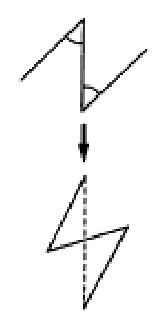
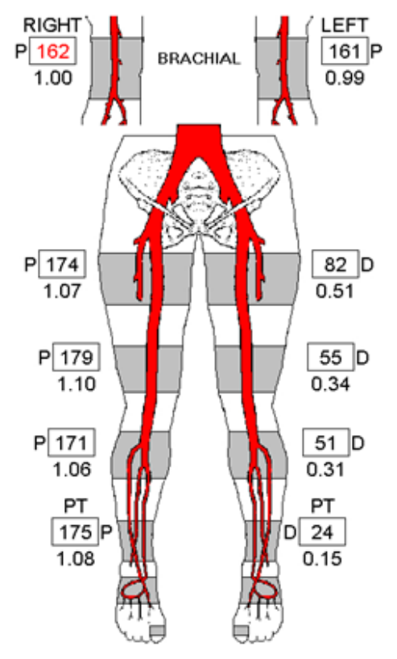
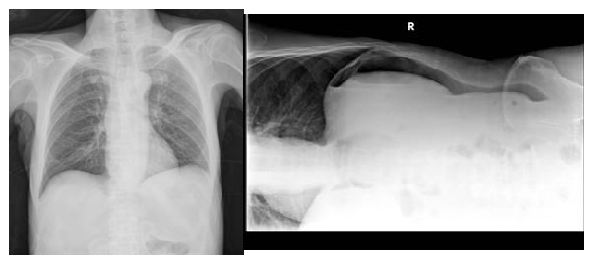
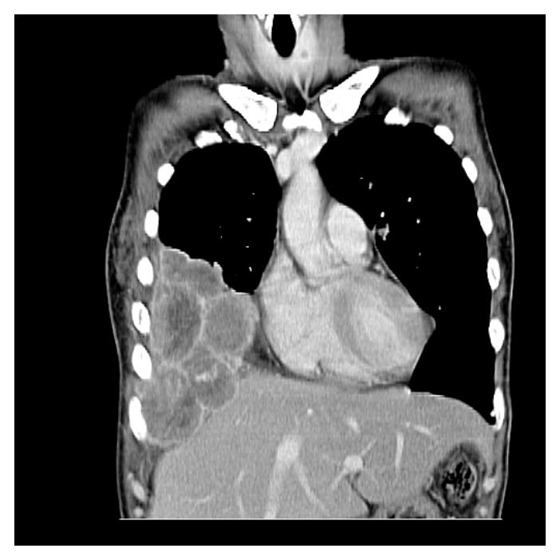
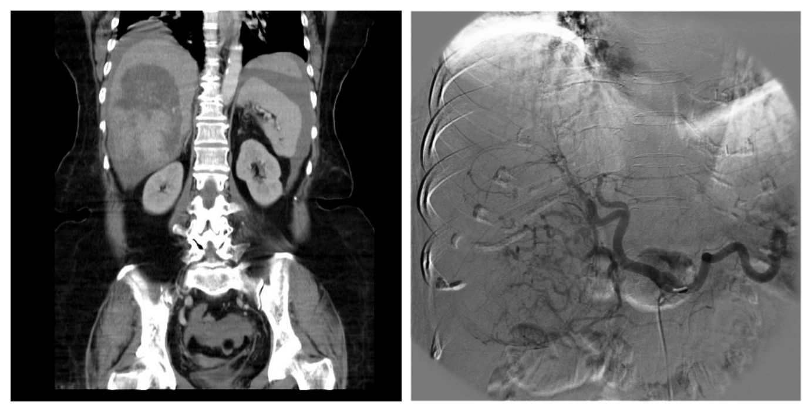

110 年第 2 次醫師醫學（五）（包括外科、骨科、泌尿科等科目及其相關臨床實例與醫學倫理）試題與答案
這一頁是民國 110 年第 2 次醫師醫學（五）（包括外科、骨科、泌尿科等科目及其相關臨床實例與醫學倫理）的整份歷屆試題，共 80 題，題目與標準答案出自考選部「國家考試試題及測驗式試題答案」開放資料，其中 80 題附有詳解。以下逐題列出題幹、選項與答案；要計時作答或記錄成績，請用線上練習。
考選部原始場次代碼：110080
線上作答這一科 →
全部 80 題
第 1 題
對於人類白血球組織抗原（human leukocyte antigen, HLA）的描述，下列何者正確？①HLA antigens位在人類第九對染色體的短臂上 ②HLA完全相同的腎臟移植可以得到比較好的預後 ③HLA-DP，HLA-DQ和HLA-DR是屬於第二型主要組織相容性複合體（major histocompatibility complex, MHC） ④第一型主要組織相容性複合體（MHC Class I主要是表現在B淋巴球（lymphocytes），樹突細胞（dendritic cells），內皮細胞（endothelial cells）和活化的（activated）T細胞 ⑤ HLA敏化作用（sensitization）會因為懷孕，輸血和曾經接受過移植而產生
- （A）②③④
- （B）①③④
- （C）②③⑤
- （D）①②⑤
答案：（C）
詳解與考點
正解：逐項判讀 HLA 的染色體位置、移植配對與 MHC 分類。②HLA 完全相同的腎臟移植預後較佳；③HLA-DP、HLA-DQ、HLA-DR 屬 MHC class II；⑤懷孕、輸血與既往移植都可造成 HLA sensitization。故正確組合為②③⑤，選 C。
A：②與③正確，但④錯誤。MHC class I 廣泛表現在所有有核細胞，不能只列為 B 細胞、樹突細胞、內皮細胞與活化 T 細胞。
B：①錯誤，HLA 基因座位於第六對染色體短臂；④亦錯誤，故此組合不成立。
D：②與⑤正確，但①將 HLA 說成第九對染色體短臂，染色體位置錯誤，故不成立。
本題考點：人類白血球抗原（human leukocyte antigen, HLA）——HLA 位於第六對染色體；MHC class II 包含 HLA-DP、DQ、DR；HLA sensitization 可由懷孕、輸血與移植暴露引發。
第 2 題
針對外傷病患的初始評估（initial assessment），首先會進行primary survey；下列對於primary survey的敘述，何者錯誤？
- （A）第一步驟是呼吸道（airway）暢通的檢查，操作時須同時注意cervical spine protection
- （B）在做breathing檢查時，如懷疑有tension pneumothorax發生時，例如頸部氣管偏向正常側，患側聽不到呼吸聲（breathing sound），則必須照一張胸部X光片，確定診斷後，再插胸管引流
- （C）在做circulation 評估時，可用腹部超音波檢查，迅速detect intra-peritoneal bleeding
- （D）在做disability及exposure，要評估病患的Glasgow Coma Scale（GCS）及可能存在的hypothermia
答案：（B）
詳解與考點
正解：primary survey 中疑似 tension pneumothorax 的立即處置。張力性氣胸是臨床診斷，若有氣管偏移、患側呼吸音消失等線索，應立刻減壓並接續胸管引流，不能為等待胸部 X 光而延誤，故錯誤的是 B。
A：primary survey 的第一步是確認 airway，且外傷病人同時須保護 cervical spine，符合 ATLS 的處置順序，故非答案。
C：circulation 階段可用腹部超音波快速偵測腹腔內出血，作為外傷出血評估的一環，故敘述正確。
D：disability 需評估神經狀態如 GCS；exposure 時須完全暴露檢查並注意預防 hypothermia，故敘述正確。
本題考點：外傷初級評估（primary survey）——ABCDE 依序處置立即致命問題；張力性氣胸（tension pneumothorax）須依臨床表現立刻減壓，不等待影像確診。
第 3 題
54歲男性，體重65公斤，因直腸癌接受根治性直腸全切除併大腸肛門吻合術及迴腸造瘻術，術後恢復良好，於術後第三天開始由口進食。但術後第八天主訴全身倦怠無力，理學檢查發現血壓90/40 mmHg，心跳100次/分，呼吸16次/分，體溫36.5oＣ，每日尿量為800毫升，每日迴腸造口排出量約3,000毫升。生化檢查發現血中鈉離子125 mEq/L、鉀離子2.5 mEq/L，全血血球計數為白血球15,000 /μL、血紅素8.0 g/dL、血小板150,000/μL。此時造成病人倦怠感最有可能的原因為何？
- （A）腎上腺功能不全合併電解質不平衡
- （B）急性失血合併低血壓
- （C）腹腔內感染合併輕微敗血症
- （D）大量體液自迴腸造口流失而致電解質不平衡
答案：（D）
詳解與考點
正解：迴腸造口每日排出量約 3,000 mL，遠高於尿量 800 mL，並合併低血壓、低鈉血症與低鉀血症。大量腸液自高輸出量迴腸造口流失會造成循環容積不足及電解質失衡，最能解釋倦怠無力，故選 D。
A：腎上腺功能不全可造成低血壓與低鈉，但常見高鉀；本題有明確的大量腸液流失與低鉀，更符合造口流失。
B：血紅素 8.0 g/dL 可能加重疲倦，但沒有持續出血的線索，且無法同時完整解釋每日大量造口排出、低鈉與低鉀。
C：白血球 15,000/μL 可使人想到感染，但病人無發燒、呼吸循環表現與大量造口流失的因果鏈更直接；它看似符合術後白血球上升，卻不能解釋特徵性的電解質型態。
本題考點：高輸出量造口（high-output stoma）——大量小腸造口排出可導致體液流失、低血壓與鈉鉀等電解質失衡；術後倦怠須結合出入量與電解質判讀。
第 4 題
腎臟移植後一個月內，何種感染較少發生？
- （A）B型肝炎活化
- （B）傷口感染
- （C）泌尿道感染
- （D）隱球菌感染（cryptooccal infection）
答案：（D）
詳解與考點
正解：腎臟移植後「一個月內」的感染時序。早期感染多與手術、住院照護、導尿管及既有病原相關，例如傷口感染與泌尿道感染；隱球菌屬伺機性感染，較常見於更晚期、持續免疫抑制後，因此一個月內較少發生，故選 D。
A：B 型肝炎活化與受者或捐贈者既有感染狀態及免疫抑制有關，可在免疫抑制後出現，不能以早期時程完全排除。
B：傷口感染與近期手術直接相關，是移植後早期需留意的感染類型，故非答案。
C：泌尿道感染受尿路重建、導尿管與免疫抑制影響，為腎臟移植後早期常見感染，故非答案。
本題考點：移植後感染時序（post-transplant infection timeline）——早期以手術與醫療照護相關感染為主；伺機性感染（opportunistic infection）常在持續免疫抑制後較受重視。
第 5 題
傷口癒合過程中，下列細胞出現於傷口的先後順序（time course）何者正確？
- （A）neutrophil→macrophage→fibroblast→lymphocyte
- （B）neutrophil→fibroblast→lymphocyte→macrophage
- （C）macrophage→lymphocyte→fibroblast→neutrophil
- （D）lymphocyte→fibroblast→neutrophil→macrophage
答案：（A）
詳解與考點
正解：傷口癒合的細胞出現時序。受傷早期先由 neutrophil 清除污染與壞死組織，接著 macrophage 清除碎屑並調控修復，再由 fibroblast 生成膠原與基質，較後期才可見 lymphocyte 參與調節，因此順序為 neutrophil→macrophage→fibroblast→lymphocyte，故選 A。
B：此選項把 fibroblast 排在 macrophage 之前，忽略 macrophage 在早期發炎清除與啟動修復中的關鍵角色，故錯。
C：此選項將 neutrophil 放到最後，與其作為急性發炎早期主要細胞的角色相反，故錯。
D：此選項將 lymphocyte 與 fibroblast 放在 neutrophil 之前，顛倒了急性發炎到增生修復的基本時序，故錯。
本題考點：傷口癒合（wound healing）——發炎期先有 neutrophil，後續 macrophage 協調清除與修復；增生期由 fibroblast 形成膠原與細胞外基質。
第 6 題
有關瘢痕瘤（Keloid），下列敘述何者錯誤？
- （A）較易發生在臉部、低於鎖骨的軀幹部及下肢
- （B）較常發生在皮膚顏色較深的人種例如非裔美國人、亞洲人及拉丁裔人
- （C）其盛行率約15%～20%
- （D）目前仍無法預防，不論內科或外科療法效果皆不彰
答案：（A）
詳解與考點
正解：官方答案為 A。瘢痕瘤常見於胸前、肩部、耳垂等高張力或特定部位，並非「臉部、低於鎖骨的軀幹部及下肢」都較易發生；（A）將典型分布過度擴張，故為錯誤敘述。惟（D）稱無法預防且所有療法效果皆不彰也過度絕對
B：瘢痕瘤在皮膚顏色較深的族群較常見，與遺傳及黑色素相關族群差異有關，故敘述正確。
C：瘢痕瘤盛行率會隨族群與研究定義而異，題目所列約 15%～20% 是常見教科書表述範圍，故非本題錯誤選項。
D：壓力治療、矽膠製品、病灶內注射及合併手術等可用於預防或治療；療效與復發率雖有挑戰，但不能據此稱為無法預防或所有療法皆無效。
本題考點：瘢痕瘤（keloid）——病灶超出原傷口邊界，常見於胸前、肩部與耳垂；深色皮膚族群較常見，治療常需多模式處置（multimodal treatment）以降低復發。
第 7 題
根據美國創傷外科學會分級（American Association for the Surgery of Trauma grading scales），下列對於肝臟創傷的分級何者錯誤？
- （A）裂傷深度1公分以內，肝包膜下血腫覆蓋達面積10%以下為第一級
- （B）裂傷深度3公分以上為第三級
- （C）整個肝葉都為包膜下血腫覆蓋，可能為第五級
- （D）總共分五級
本題送分，無標準答案
詳解與考點
本題官方公告送分。
第 8 題
下列何項關於人體器官移植的陳述是錯誤的？
- （A）器官移植術後的排斥主要是跟人類白血球抗原（human leukocyte antigen）有關，此抗原基因在第六對染色體上
- （B）器官移植術後的超急性排斥（hyperacute rejection）主要和捐贈者體內已存在抗體（preformed antibody）有關
- （C）同種識別（allorecognition）可經由直接或間接路徑（direct or indirect pathway）發生，都是經由T細胞（T-cell）活化造成
- （D）器官移植術後的急性排斥（acute rejection）依機轉主要分為細胞型排斥（cellular rejection）和體液型排斥（humoral rejection）
答案：（B）
詳解與考點
正解：超急性排斥的抗體來源。超急性排斥是受者體內預先存在、針對捐贈者抗原的抗體快速攻擊移植物，而非捐贈者體內的預先存在抗體；B 將抗體來源顛倒，故為錯誤敘述。
A：器官移植排斥的重要抗原為 HLA，其基因位於第六對染色體，敘述正確。
C：同種識別可經直接或間接路徑引發受者 T 細胞活化，為移植免疫反應的核心機轉，故敘述正確。
D：急性排斥可依主要機轉分為細胞型與體液型排斥，故敘述正確。
本題考點：超急性排斥（hyperacute rejection）——由受者預先形成的抗捐贈者抗體（preformed anti-donor antibody）造成；同種識別（allorecognition）可經直接與間接路徑活化 T 細胞。
第 9 題
關於intraspinal tumors的敘述，下列何者正確？
- （A）最常見的extradural tumor為metastatic tumor
- （B）最常見的intradural extramedullary tumor為metastatic tumor
- （C）最常見的intramedullary tumor為metastatic tumor
- （D）最常見的intramedullary tumor為meningioma
答案：（A）
詳解與考點
正解：依脊髓腫瘤解剖位置判斷常見病理。硬膜外腫瘤最常見為轉移性腫瘤，因脊椎骨常為全身惡性腫瘤轉移部位，病灶可向硬膜外延伸壓迫脊髓，故選 A。
B：硬膜內髓外腫瘤最常見並非轉移性腫瘤，而常見為 meningioma 或 nerve sheath tumor 等，故錯。
C：髓內腫瘤最常見並非 metastatic tumor；轉移可發生但不是典型最常見類型，故錯。
D：meningioma 常屬硬膜內髓外腫瘤，而非髓內腫瘤；此選項看似抓到常見腫瘤名稱，卻放錯解剖腔室。
本題考點：脊椎管內腫瘤（intraspinal tumors）——硬膜外（extradural）腫瘤以轉移性腫瘤常見；硬膜內髓外（intradural extramedullary）與髓內（intramedullary）腫瘤須依病灶位置鑑別。
第 10 題
脈絡叢乳頭狀瘤（choroid plexus papillomas）造成腦室擴大（ventricular enlargement）的原因，不包括下列何者？
- （A）腫瘤長大（tumor growth）
- （B）後脈絡叢血管被腫瘤壓迫（posterior choroid artery compression by tumor）
- （C）腦脊髓液過度製造（excessive production of CSF）
- （D）出血造成蜘蛛膜炎以致減少腦脊髓液吸收（decreased absorption of CSF from hemorrhage-inducedarachnoiditis）
答案：（B）
詳解與考點
正解：脈絡叢乳頭狀瘤合併腦室擴大；此腫瘤造成水腦的典型機轉是阻塞腦脊髓液（CSF）循環、過度分泌 CSF，或出血後影響吸收，而非壓迫後脈絡叢動脈。後脈絡叢動脈受壓主要影響腫瘤或局部組織灌流，不能直接解釋 CSF 生成、循環或吸收失衡，故選 B。
A：腫瘤長大可占據腦室或壓迫 CSF 流出路，造成阻塞性水腦，確實可使腦室擴大，故不是答案。
C：脈絡叢乳頭狀瘤可增加 CSF 分泌；這個機轉看似少見，但正是此腫瘤相較其他腦室腫瘤的重要特徵，故非答案。
D：腫瘤出血後的蜘蛛膜炎可妨礙蛛網膜絨毛吸收 CSF，形成交通性水腦，能造成腦室擴大，故不是答案。
本題考點：水腦（hydrocephalus）的機轉包括 CSF 流出阻塞、過度生成與吸收減少；脈絡叢乳頭狀瘤（choroid plexus papilloma）可兼有阻塞與 CSF 過度分泌。
第 11 題
下列關於吊頸骨折（Hangman's fracture）之敘述何者正確？
- （A）第一頸椎側體（lateral mass）爆裂性骨折（bursting fracture）
- （B）第二頸椎關節小面（pars interarticularis fracture）骨折移位
- （C）第三、四頸椎伸張性損傷
- （D）雙側性關節面鎖住（locked facet）
答案：（B）
詳解與考點
正解：Hangman's fracture，指第二頸椎（C2）雙側椎弓根間部，即 pars interarticularis 的骨折，常伴 C2 相對 C3 的移位。其典型受傷機轉為過伸展合併軸向負荷，故選 B。
A：第一頸椎側塊向外爆裂是 Jefferson fracture 的典型描述，解剖位置在 C1，不是 Hangman's fracture。
C：第三、四頸椎的伸張性損傷不符合本題 C2 pars 骨折的定義；看似同為頸椎過伸展傷害，但受傷節段不同。
D：雙側關節面鎖住是屈曲－牽張造成的頸椎脫位表現，並非 C2 pars 骨折的主要病灶。
本題考點：吊頸骨折（Hangman's fracture）是 C2 pars interarticularis 骨折；Jefferson fracture 是 C1 burst fracture；雙側 locked facet 則常見於下頸椎屈曲性脫位。
第 12 題
關於燒傷病人焦痂切開術（escharotomy）之敘述，何者錯誤？
- （A）肢體的整圈全層燒燙傷，是手術的適應症
- （B）胸廓的全層燒燙傷，造成呼吸困難，是手術的適應症
- （C）焦痂切開術（escharotomy）需將筋膜切開
- （D）緊急時可以在一般病房病床邊進行（bedside procedure）
答案：（C）
詳解與考點
正解：題目問錯誤敘述，關鍵在區分 escharotomy 與 fasciotomy。焦痂切開術只切開無彈性的燒傷焦痂，以解除環狀全層燒傷對肢體循環或胸廓擴張的壓迫；若需切開深部筋膜，才是筋膜切開術（fasciotomy），故錯誤的是 C。
A：肢體環狀全層燒傷的焦痂會隨水腫形成束帶效應，危及遠端灌流時可施行 escharotomy，敘述正確。
B：胸廓環狀全層燒傷可限制胸壁擴張並造成通氣困難，切開焦痂以恢復胸廓順應性是適應症，故非答案。
D：出現危及肢體或呼吸的壓迫時，escharotomy 是可緊急執行的 bedside procedure；此處置重點在及時解除焦痂束縛，敘述正確。
本題考點：焦痂切開術（escharotomy）切的是焦痂，適用於環狀全層燒傷造成循環或通氣受限；筋膜切開術（fasciotomy）則須切開深部筋膜，兩者解剖層次不同。
第 13 題
關於手部先天性併指症（syndactyly）的敘述，何者錯誤？
- （A）可單獨發生，也有可能合併其他症候群，如Poland syndrome
- （B）最常受影響的手指，是拇指與食指之併指
- （C）手指的成形在胚胎發育過程中，牽涉細胞凋亡（apoptosis）和BMP-4（bone morphogenic protein）
- （D）對於完全型併指（complete syndactyly）之指蹼（webspace）的重建，背側苜蓿葉型皮瓣（dorsal clover leafflap），是一種實用的選擇
答案：（B）
詳解與考點
正解：本題問併指症的錯誤敘述。併指最常累及中指與無名指，並非拇指與食指；拇食指間的併指雖可能出現，卻不是最常見組合，故選 B。
A：併指可為孤立性畸形，也可見於 Poland syndrome 等症候群，敘述正確。
C：胚胎肢芽指間組織須經細胞凋亡分離，BMP-4 參與此發育訊號；凋亡失常會造成併指，故非答案。
D：完全型併指重建需建立足夠深度與形狀的指蹼，背側苜蓿葉型皮瓣是可用的局部皮瓣設計，敘述正確。
本題考點：併指症（syndactyly）源於胚胎指間細胞凋亡（apoptosis）異常；最常見於中指與無名指；完全型重建重點是指蹼（webspace）與皮膚覆蓋。
第 14 題
下列何種情況最不適合斷指重接（replantation）手術？
- （A）拇指（thumb）截斷
- （B）單一手指的多段（multiple level）截斷
- （C）幼兒斷指
- （D）單一手指的遠端指節（distal phalanx）截斷
答案：（B）
詳解與考點
正解：「最不適合」斷指重接。單一手指的多段截斷代表傷段多、可用血管與神經條件較差，重接後功能收益有限且手術複雜，通常不利於重接，故選 B。
A：拇指對抓握、對掌與整體手功能極重要，拇指截斷通常是積極考慮重接的適應症，故非答案。
C：幼兒有較佳組織癒合與神經再生潛力，且日後功能需求長，兒童斷指常應積極評估重接。
D：單一遠端指節截斷的血管較細，技術上看似困難；但若傷口條件可行，仍可能獲得長度、感覺與指甲床的功能效益，不能一概列為最不適合。
本題考點：斷指重接（replantation）優先考量拇指、兒童與多指截斷；多段截斷常因組織破壞範圍與功能預後不佳而成為不利條件。
第 15 題
下半身麻痺的病人坐在輪椅上，常有機會發生坐骨部壓瘡，在坐姿時坐骨隆凸部位受到多少壓力及最少持續多久壓力時間較容易開始發生壓瘡？
- （A）60 mmHg，0.5小時以上
- （B）60 mmHg，1小時以上
- （C）30 mmHg，0.5小時以上
- （D）30 mmHg，1小時以上
答案：（B）
詳解與考點
正解：輪椅坐姿下坐骨隆凸的持續壓迫；依本題教材採用的門檻，60 mmHg 持續 1小時以上較易開始形成壓瘡，故選 B。壓瘡不是只有壓力大小的問題，還取決於持續時間、剪力、潮濕與個人組織耐受性；此題的精確壓力與時間為教材型數值，臨床風險仍須整體判斷。
A：60 mmHg 的壓力方向雖符合高壓風險，但 0.5小時未達本題設定的 1小時門檻，故不符。
C：30 mmHg 接近微血管灌流壓，容易成為誘答；但本題問的是輪椅坐姿下較易開始發生壓瘡的組合，指定的壓力為 60 mmHg，故錯。
D：此選項雖有 1小時的持續時間，但壓力值仍非本題設定的 60 mmHg，不能選。
本題考點：壓瘡（pressure injury）形成與壓力強度、受壓時間、剪力及組織耐受性有關；坐骨隆凸（ischial tuberosity）是輪椅使用者的高風險受壓點。
第 16 題
22歲的王同學是八仙塵爆的燒傷患者，這次來門診求助主要是因為手腕背側的帶狀疤痕攣縮影響彎曲活動，醫師建議施予simple Z-plasty 疤痕鬆懈手術（如附圖），如果術後預計比原先增加75%的延展長度，應設計多少角度的simple Z-plasty？

- （A）Simple 30°-angle Z-plasty
- （B）Simple 45°-angle Z-plasty
- （C）Simple 60°-angle Z-plasty
- （D）Simple 90°-angle Z-plasty
答案：（C）
詳解與考點
正解：simple Z-plasty 以中央疤痕為中軸，在兩端作等長、對稱的斜切肢；如圖所示，兩個三角皮瓣互換位置後，原本垂直的中央疤痕軸會變長，同時改變張力方向。其理論延展長度與夾角有固定關係：30°約增加25%、45°約增加50%、60°約增加75%、90°約增加120%。欲增加75%延展長度，應設計60°角，故選C。
A：simple 30°-angle Z-plasty 的理論延展約為25%，雖可使帶狀攣縮的疤痕方向改變，但不足以達成本題要求的75%延長。
B：simple 45°-angle Z-plasty 的理論延展約為50%，延長效果仍低於75%，故不符合手術設計目標。
D：simple 90°-angle Z-plasty 的理論延展約為120%，超過題目預計增加75%的長度；且角度愈大，皮瓣轉位所需空間與操作張力也應一併評估，非本題所求。
本題考點：Z成形術（Z-plasty）是以兩個等長三角皮瓣互換位置來延長攣縮疤痕、改變疤痕張力方向的局部皮瓣術；simple 60°-angle Z-plasty 的理論延展約為75%，是常考的幾何關係。
第 17 題
下列那一條血管不適合做為冠狀動脈繞道手術（coronary artery bypass grafting）之繞道管道（conduit）？
- （A）股動脈（femoral artery）
- （B）內乳動脈（internal mammary artery）或稱內胸動脈（internal thoracic artery）
- （C）大隱靜脈（greater saphenous vein）
- （D）橈動脈（radial artery）
答案：（A）
詳解與考點
正解：CABG 的繞道 conduit。常用管道要能安全游離並提供適當口徑與長度；股動脈是下肢主要供血動脈，取用會造成嚴重肢體缺血風險，並非冠狀動脈繞道的適合管道，故選 A。
B：內乳動脈，亦稱內胸動脈，是 CABG 的標準動脈移植物，特別常用於左前降支，故非答案。
C：大隱靜脈可提供足夠長度，為常用靜脈移植物，雖長期通暢率與動脈移植物不同，仍是合適 conduit。
D：橈動脈是可使用的動脈移植物；術前需確認手部側枝循環，但這不改變其屬常用管道的事實。
本題考點：冠狀動脈繞道手術（coronary artery bypass grafting, CABG）常用內胸動脈（internal thoracic artery）、橈動脈（radial artery）與大隱靜脈（great saphenous vein）作為移植物。
第 18 題
下列何者不是嚴重主動脈瓣閉鎖不全（severe aortic insufficiency）之手術適應症？
- （A）急性嚴重主動脈瓣閉鎖不全（acute severe aortic insufficiency）併有休克之病患
- （B）有症狀之慢性嚴重主動脈瓣閉鎖不全（chronic severe aortic insufficiency），不論有無心臟功能不全
- （C）無症狀之慢性嚴重主動脈瓣閉鎖不全（chronic severe aortic insufficiency），且左心室末期收縮直徑（LVESD）30mm之病患
- （D）無症狀之慢性嚴重主動脈瓣閉鎖不全（chronic severe aortic insufficiency），且有左心室功能不全，左心室射出率低於50%
答案：（C）
詳解與考點
正解：題目問嚴重主動脈瓣閉鎖不全不具手術適應症者。無症狀慢性嚴重主動脈瓣閉鎖不全單有 LVESD 30 mm，未顯示達到左心室擴大或功能惡化的手術門檻，故選 C。各專業指引對絕對直徑與體表面積校正門檻會隨版本調整，本題以「30 mm 未達門檻」的原則判讀。
A：急性嚴重主動脈瓣閉鎖不全合併休克表示血流動力學不穩定，須緊急手術處理，故非答案。
B：有症狀的慢性嚴重主動脈瓣閉鎖不全代表病人已出現臨床代償失敗，不論左心室功能是否明顯下降，均是手術評估的重要適應症。
D：無症狀但左心室射出率低於 50% 表示左心室收縮功能受損，不能因沒有症狀而延誤瓣膜手術，故非答案。
本題考點：主動脈瓣閉鎖不全（aortic regurgitation）的手術評估重視急性血流動力學不穩定、症狀、左心室射出率（LVEF）與左心室擴大；無症狀患者的精確尺寸門檻具有指引時效性。
第 19 題
78歲男性抽菸且合併高血壓，糖尿病病史，接受都卜勒分段血壓（Dopper segmental pressure）檢查之結果如附圖。則下列敘述何者錯誤？

- （A）間歇性跛行或潰瘍不癒合以左下肢為主
- （B）狹窄之可能部位位於左側腸骨動脈或股動脈
- （C）雙側下肢血管，左側足背動脈脈搏觸診較右側微弱
- （D）如需進行膝下繞道手術時，以聚四氟乙烯（polytetrafluoroethylene, PTFE）人工血管植入為主
答案：（D）
詳解與考點
正解：本題問錯誤敘述。圖中右側踝部後脛動脈（PT）壓力為175 mmHg、踝肱指數（ankle-brachial index, ABI）為1.08，屬正常；左側PT壓力僅24 mmHg、ABI為0.15，且左側自大腿起的分段壓力已明顯低於右側，顯示左下肢有嚴重周邊動脈疾病。若須進行膝下繞道手術，首選通常是自體大隱靜脈等自體靜脈移植物，而非以PTFE人工血管為主；PTFE用於膝下遠端繞道的長期通暢率較差，故錯誤的是D。
A：嚴重左下肢缺血會使活動時供氧不足而造成左側為主的間歇性跛行；若已進展至嚴重肢體缺血，也較容易出現左足或小腿潰瘍不癒合，敘述正確，故非答案。
B：左側近端大腿壓力為82 mmHg、ABI為0.51，較右側近端大腿174 mmHg、ABI為1.07大幅下降；此後左側膝上、膝下及踝部壓力持續偏低，支持左側腸骨動脈或股動脈層級存在具血流動力學意義的狹窄或阻塞，敘述正確，故非答案。
C：圖中左側踝部PT壓力24 mmHg，遠低於右側175 mmHg，左側ABI 0.15也遠低於右側1.08，表示左足遠端灌流嚴重不足。因此左側足背動脈脈搏預期較右側微弱甚至難以觸及，敘述正確，故非答案。
本題考點：分段血壓（segmental limb pressure）可利用相鄰節段壓力的下降定位下肢動脈狹窄；踝肱指數（ankle-brachial index, ABI）明顯降低代表周邊動脈疾病（peripheral artery disease）；膝下繞道手術（below-knee bypass）優先考慮自體靜脈移植物，尤其是大隱靜脈（great saphenous vein）。
第 20 題
有關單一心室先天性心臟病之敘述，下列何者錯誤？
- （A）左心室發育不全症候群（hypoplastic left heart syndrome）和三尖瓣發育不全（tricuspid atresia）皆適合行Fontan術式
- （B）Bidirectional Glenn shunt可以是Fontan術式之階段手術，一般建議在第一階段手術後3至6個月左右施行
- （C）進行Bidirectional Glenn shunt術式時，保留動脈到肺動脈之分流，可增加血氧濃度，且可提高單心室之長期存活率
- （D）Norwood術式是單一心室之第一階段術式，可以採用心室到肺動脈之分流來取代主動脈到肺動脈之分流
答案：（C）
詳解與考點
正解：本題問錯誤敘述。Bidirectional Glenn shunt 後若持續保留額外的體肺動脈分流，雖可能增加血氧，卻會增加單心室容量負荷與肺血流壓力，不能視為提高長期存活率的常規原則，故選 C。
A：左心室發育不全症候群與三尖瓣發育不全皆屬可採單心室循環策略的病變，Fontan 術式可作為其終期姑息手術，敘述正確。
B：Bidirectional Glenn shunt 是 Fontan 分期治療的重要中間步驟，通常在第一階段術後嬰兒期評估施行，故非答案。
D：Norwood 術式是左心室發育不全症候群等病變的第一階段重建，可使用心室到肺動脈導管作為肺血流來源，敘述正確。
本題考點：單心室循環（single-ventricle circulation）常採 Norwood、Bidirectional Glenn、Fontan 的分期策略；Glenn 後須避免不必要的肺血流與單心室容量負荷。
第 21 題
下列先天性心臟病，何者不是發紺性（cyanotic heart disease）心臟病？
- （A）法洛氏四重症（tetralogy of Fallot）
- （B）大動脈轉位（transposition of great arteries）
- （C）肺動脈吊索（pulmonary artery sling）
- （D）三尖瓣發育不全（tricuspid atresia）
答案：（C）
詳解與考點
正解：「不是發紺性」先天性心臟病。肺動脈吊索是異常左肺動脈走行壓迫氣管或右主支氣管的血管環相關病變，主要表現為喘鳴與呼吸道阻塞，不以右向左分流造成發紺為典型，故選 C。
A：法洛氏四重症因右心室流出道阻塞與右向左分流，可造成發紺，故非答案。
B：大動脈轉位使體循環與肺循環呈平行，若混合不足可於新生兒期嚴重發紺，故非答案。
D：三尖瓣發育不全使右心流入受阻，需藉心房或心室層級分流維持循環，常有發紺表現，故非答案。
本題考點：發紺性心臟病（cyanotic heart disease）多涉及右向左分流或循環混合異常；肺動脈吊索（pulmonary artery sling）主要是呼吸道受壓病變。
第 22 題
關於惡性肋膜積液（pleural effusion）的敘述，何者正確？
- （A）在女性中，最常因為乳癌產生惡性肋膜積液
- （B）引流惡性肋膜積液是必要的，而且可以提升病人存活率
- （C）如果因為肺癌腫瘤產生的肋膜積液，不論惡性或良性，皆不適合手術治療
- （D）如果惡性肋膜積液經引流，仍有大量積液，可以考慮肋膜沾黏術，其中以滑石粉（talc）沾黏效果最差
答案：（A）
詳解與考點
正解：女性惡性肋膜積液的常見原發癌。女性患者中，乳癌是最常見相關惡性腫瘤之一，也是本題所問的正確配對，故選 A。
B：引流可改善呼吸困難等症狀，是重要的緩和處置；但惡性肋膜積液多代表晚期疾病，引流本身不會提升存活率，故錯。
C：肺癌相關肋膜積液需依惡性證據、分期與病人整體狀況決定治療，不能說不論惡性或良性都不適合手術治療。
D：反覆症狀性惡性肋膜積液可考慮肋膜沾黏術，滑石粉（talc）是效果較佳且常用的硬化劑；此選項把其效果說反了。
本題考點：惡性肋膜積液（malignant pleural effusion）以症狀緩解為治療目標；胸腔引流與肋膜沾黏術（pleurodesis）可處理反覆積液，talc 為常用硬化劑。
第 23 題
關於先天性肺部疾病，下列敘述何者錯誤？
- （A）支氣管囊腫（bronchogenic cyst）無症狀不需要手術切除
- （B）肺葉肺氣腫（lobar emphysema）為最常切除的肺部先天性囊腫疾病
- （C）肺內游離肺（intralobar pulmonary sequestration）常發於下肺葉，血液回流到肺靜脈
- （D）肺血管吊索（pulmonary vascular sling）常伴有喘鳴發生
答案：（A）
詳解與考點
正解：題目問錯誤敘述。支氣管囊腫即使無症狀，仍可能感染、出血、壓迫周圍結構或造成診斷不確定，通常建議在可接受風險下完整切除，而不是一概不需手術，故選 A。
B：先天性肺葉肺氣腫可因過度充氣壓迫正常肺組織，出現症狀時常需外科切除；本題將其列為常見需切除的先天性肺部病變，非答案。
C：肺內游離肺常在下肺葉，異常動脈供血來自體循環，靜脈回流多入肺靜脈，敘述正確。
D：肺血管吊索可壓迫氣管或支氣管，因此常見喘鳴等呼吸道症狀，故非答案。
本題考點：支氣管囊腫（bronchogenic cyst）常以手術切除避免併發症並確立診斷；肺內游離肺（intralobar pulmonary sequestration）通常回流至肺靜脈；肺血管吊索（pulmonary vascular sling）可造成喘鳴。
第 24 題
關於肺癌檢查的敘述，下列何者正確？
- （A）肺癌患者均應例行性接受腦部MRI檢查
- （B）鱗狀細胞癌比腺癌容易由痰液細胞學檢驗出來
- （C）肺部低密度電腦斷層檢查，無法減少高危險群的肺癌死亡率
- （D）正子攝影檢查為癌症篩檢的良好替代方法
答案：（B）
詳解與考點
正解：肺癌檢查方法與腫瘤位置。鱗狀細胞癌較常為中央型病灶，腫瘤細胞較容易脫落進中央氣道並出現在痰液，因此相較常見周邊型的腺癌，痰液細胞學較可能檢出鱗狀細胞癌，故選 B。
A：腦部影像需依神經症狀、分期與治療規畫選擇，並非每位肺癌患者都應例行接受腦部 MRI。
C：低劑量電腦斷層（low-dose CT）對合適的高風險族群可降低肺癌死亡率；此選項否定其效益，故錯。
D：正子攝影（PET）主要用於腫瘤分期與轉移評估，不能取代低劑量 CT 作為肺癌篩檢工具。
本題考點：痰液細胞學（sputum cytology）較有利於中央型肺癌；低劑量電腦斷層（low-dose CT）用於高風險肺癌篩檢；PET 主要用於分期（staging）。
第 25 題
有關食道疾病的敘述，下列何者正確？
- （A）Zenker憩室（Zenker diverticulum）主要以測壓機（manometry）診斷
- （B）中段食道憩室（midesophageal diverticula）主要為位於右側的真性憩室（true diverticulum）
- （C）胃食道逆流的胃底折疊術（fundoplication）應做360度的包埋，效果較佳
- （D）食道腐蝕性傷害在無胃鏡檢查下，應立即放置鼻胃管引流
答案：（B）
詳解與考點
正解：中段食道憩室的型態與位置。中段食道憩室多為鄰近縱膈淋巴結發炎牽拉形成的牽引性憩室，包含食道壁全層，屬真性憩室，且常向右側突出，故選 B。
A：Zenker 憩室的首選診斷檢查是吞鋇攝影（barium swallow）；食道測壓可評估相關運動功能，但不是主要診斷工具。
C：胃底折疊術的包覆角度須依食道蠕動與病人狀況選擇，並非所有胃食道逆流都應固定做 360度包埋；完全包覆看似抗逆流較強，卻可能增加吞嚥困難。
D：腐蝕性食道傷害未評估前盲目置入鼻胃管可能加重穿孔或損傷，不能作為立即常規處置。
本題考點：中段食道憩室（midesophageal diverticulum）常為牽引性真性憩室（traction true diverticulum）；Zenker 憩室以吞鋇攝影診斷；腐蝕性食道傷害避免盲目插入鼻胃管。
第 26 題
下列關於食道穿孔之敘述，何者不適當？
- （A）一般建議，先以食道鏡檢查作為優先診斷工具
- （B）如經證實，則馬上給予適當治療不可延誤
- （C）如穿孔發生在12小時內，則可考慮修補縫合
- （D）情況不佳的年長患者，可考慮stenting
答案：（A）
詳解與考點
正解：題目問食道穿孔不適當處置。懷疑食道穿孔時，通常先以水溶性對比食道攝影或胸部電腦斷層評估穿孔位置與外漏；食道鏡可能使穿孔擴大或增加污染，並非一般優先的第一線診斷工具，故選 A。
B：食道穿孔可迅速造成縱膈炎與敗血症，一旦證實應立即開始適當治療，不宜延誤，敘述正確。
C：早期發現的穿孔，若病人與組織條件適合，可考慮手術修補；「12小時內」反映越早處理預後越好的原則，故非答案。
D：對高風險或狀況不佳的患者，依穿孔位置與污染程度可考慮內視鏡支架（stenting）等較低侵入性策略，敘述可成立。
本題考點：食道穿孔（esophageal perforation）首重迅速診斷、抗感染與控制污染；水溶性對比攝影或 CT 有助初始評估；治療可包括修補、引流與內視鏡支架。
第 27 題
下列縱膈腔腫瘤相關症狀，何者錯誤？
- （A）neurofibroma - von Recklinghausen's disease
- （B）carcinoid - carcinoid syndrome
- （C）thymoma - myasthenia gravis
- （D）thymoma - vertebral anomalies
答案：（D）
詳解與考點
正解：題目問縱膈腔腫瘤相關症狀的錯誤配對。胸腺瘤典型相關的是重症肌無力等自體免疫疾病，不是椎體畸形；椎體異常較會讓人聯想到某些神經源性或先天性病變，故選 D。
A：neurofibroma 可與 von Recklinghausen disease，即神經纖維瘤病第 1 型相關，配對正確。
B：carcinoid 腫瘤可分泌具活性的物質而造成 carcinoid syndrome，雖非每例都有，但此相關性正確。
C：thymoma 與 myasthenia gravis 有經典關聯，是縱膈腔腫瘤的重要考點，故非答案。
本題考點：縱膈腔腫瘤（mediastinal tumor）的關聯疾病包括 thymoma-myasthenia gravis、neurofibroma-neurofibromatosis type 1、carcinoid-carcinoid syndrome。
第 28 題
下列何者不是常見化膿性肝膿瘍之致病原因？
- （A）膽道疾病
- （B）經肝門靜脈血流感染
- （C）經肝動脈感染（菌血症）
- （D）腫瘤內細胞壞死
答案：（D）
詳解與考點
正解：常見化膿性肝膿瘍的感染途徑。膽道上行感染、經門靜脈由腹腔感染播散、以及菌血症經肝動脈播散都是標準途徑；腫瘤內細胞壞死本身不是化膿性肝膿瘍的常見致病途徑，故選 D。
A：膽道疾病，尤其膽道阻塞或膽管炎，可使細菌上行進入肝內膽管，是常見原因。
B：腹腔感染可經肝門靜脈帶入細菌，例如腸道或腹腔膿瘍相關感染，故非答案。
C：菌血症可經肝動脈造成血行性肝膿瘍，雖相對比例依族群而異，仍是公認感染途徑。
本題考點：化膿性肝膿瘍（pyogenic liver abscess）常由膽道（biliary）、門靜脈（portal venous）或肝動脈血行性（hepatic arterial hematogenous）感染造成。
第 29 題
肝切除術後，下列何者不是病患術後照料應該注意的事項？
- （A）術後若腹水流失嚴重，不宜限制病患水分及鹽分的輸入
- （B）術後數日視情況給與白蛋白製劑及新鮮冷凍血漿
- （C）術後數小時內體溫低，宜用加溫床維持體溫
- （D）術後血糖會降低居多，宜注意維持適當血糖濃度
答案：（A）
詳解與考點
正解：官方答案為 A。術後若腹水流失嚴重，仍須密切平衡循環血容量與腹水控制，通常要審慎管理鈉與水分；說成「不宜限制水分及鹽分輸入」過於絕對，可能加重腹水與體液失衡，故選 A。惟（D）稱術後血糖會降低居多也不精確，肝切除的手術壓力與胰島素阻抗常可造成暫時性高血糖
B：術後可依凝血功能、白蛋白與臨床容量狀態評估是否補充白蛋白或新鮮冷凍血漿，敘述保留「視情況」而正確。
C：大手術後早期低體溫會增加凝血異常與不良預後風險，使用加溫措施維持體溫是合理照護。
D：肝切除後仍須監測血糖並維持適當濃度；但血糖不必然以降低為主，大範圍切除或嚴重肝功能不全時才可能有低血糖風險。
本題考點：肝切除術後照護（post-hepatectomy care）重視液體與鈉平衡、凝血功能、保溫及血糖監測；血糖異常須依肝功能與手術壓力個別判讀。
第 30 題
病人接受幽門保留式胰十二指腸切除手術，術中失血量為1000 ml，術後當天在恢復室內記錄該病人的引流管流出鮮紅色的液體，流量為200 mL/小時，持續4小時，血紅素從13 mg/dL降至8 mg/dL。同時病人的血壓從130/80 mmHg降至90/60 mmHg。下一步應如何處置？
- （A）立即執行剖腹止血
- （B）給與2000 ml colloid 輸液維持病人生命徵象
- （C）檢查病人的血液中凝血時間並輸紅血球及新鮮血漿
- （D）給與病人輸全血
答案：（A）
詳解與考點
正解：胰十二指腸切除術後立即出現持續鮮紅引流、每小時 200 mL 持續 4小時、血紅素由 13 降至 8，並合併血壓由 130/80 降至 90/60 mmHg。這是進行性術後出血與血流動力學不穩定，不能只等待檢驗或單靠補液；應立即剖腹探查並止血，故選 A。
B：colloid 補液可作為復甦的一部分，卻無法控制持續出血源；在明顯失血性休克時單獨輸液會延誤止血。
C：檢查凝血與輸注血品有其必要性，但本例有大量持續血性引流與低血壓，不能以等待檢驗取代緊急手術止血。
D：輸血可暫時改善攜氧與容量，卻不能處理術後活動性出血；看似直接補回失血，但不是本題所問的下一步關鍵處置。
本題考點：術後出血（postoperative hemorrhage）若有持續鮮紅引流、血紅素快速下降與血流動力學不穩定，須同步復甦並立即控制出血源；失血性休克（hemorrhagic shock）不能只靠輸液或輸血。
第 31 題
一位82歲男性病人，過去病史包括有高血壓、糖尿病、鬱血性心衰竭、心律不整（atrial fibrillation）、升結腸癌手術後；因為心肌梗塞（myocardial infarction）作過心導管並放了2根支架。在心臟內科住院時，發現病人腹部手術的傷口有一可回復性之腹壁疝氣（reducible ventral hernia），下列處置何者正確？
- （A）腹壁疝氣手術必須於全身麻醉下施行，但因為已經讓心臟內科醫師照顧很好，可以不用請麻醉科醫師評估病人狀況
- （B）檢視病人目前用藥並不重要，可以不用停止使用抗凝劑
- （C）腹部手術前後致死的原因，絕對與心血管疾病都無關
- （D）待心肌梗塞發生6個月後再考慮手術
答案：（D）
詳解與考點
正解：可回復性腹壁疝氣屬可擇期手術，但病人剛發生心肌梗塞且曾置放支架，圍手術心血管風險極高。應先延後非緊急疝氣手術並完成心臟與麻醉風險評估；依本題選項，待心肌梗塞後 6個月再考慮手術最適當，故選 D。精確等待期間還會受心肌梗塞型態、支架種類與抗血小板治療影響，臨床須個別化。
A：全身麻醉前仍需麻醉科及相關專科進行風險評估，不能因已有心臟內科照護就省略。
B：抗凝或抗血小板藥物會影響手術出血與支架血栓風險，必須檢視並協調管理，不能說不重要。
C：腹部手術前後死亡風險與心血管疾病密切相關，此選項用「絕對無關」否認已知風險，明顯錯誤。
本題考點：非心臟手術的心血管風險評估（perioperative cardiovascular evaluation）須考量近期心肌梗塞、冠狀動脈支架與抗血栓藥物；可擇期手術應在風險穩定後安排。
第 32 題
下列有關小腸的敘述，何者錯誤？
- （A）具有消化、吸收、內分泌的功能，且為體內重要的免疫器官
- （B）腸道阻塞會因外因性、內因性跟管腔內的病因所造成。最常見的原因是術後沾黏
- （C）腸胃道基質瘤（gastrointestinal stromal tumor）是從腸道的間質組織生出，為小腸最常見的惡性腫瘤，容易復發並轉移
- （D）腸胃道基質瘤不常經由淋巴轉移，所以在針對腸胃道基質瘤進行手術時，不需要特別進行淋巴廓清手術
答案：（C）
詳解與考點
正解：「小腸最常見的惡性腫瘤」。腸胃道基質瘤（gastrointestinal stromal tumor, GIST）雖是小腸常見的間質性腫瘤，卻不是小腸最常見惡性腫瘤；小腸腺癌較常見。因此（C）的敘述錯誤，故選 C。
A：小腸具有消化、吸收與內分泌功能，腸相關淋巴組織也參與黏膜免疫，敘述正確。
B：腸阻塞可由腸壁外、腸壁本身及腔內病因造成；術後沾黏是常見的機械性小腸阻塞原因，敘述正確。
D：GIST 較常經血行或腹膜播散，區域淋巴轉移相對少見，故一般不做常規淋巴結廓清；它看似少了癌症分期，實為 GIST 的特性。
本題考點：小腸腫瘤（small bowel neoplasms）；腸胃道基質瘤（GIST）源自間質細胞，通常不以淋巴轉移為主。
第 33 題
膽結石是膽囊及膽道最常見的問題，下列有關膽結石的敘述何者正確？
- （A）大部分膽結石是沒有症狀的，但是考慮到手術的進步及其可能引發的併發症，只要診斷有膽結石，應該就要建議病人接受手術治療
- （B）膽結石引發的急性膽囊炎，主要是因為膽囊管被阻塞而引發的後續發炎，可以藉由超音波確診，其診斷敏感性可達八成以上，特異性可達九成以上
- （C）若膽結石掉落到總膽管後，就不需要擔心，因石頭一定會自然排除，症狀會得到緩解
- （D）目前進行手術大部分是利用腹腔鏡進行膽囊切除，而此手術最常見的併發症為術中膽囊破裂導致結石掉落腹腔造成反覆感染
答案：（B）
詳解與考點
正解：急性膽囊炎的阻塞部位與初步影像診斷。急性膽囊炎通常由膽囊管阻塞引起，超音波是首選影像檢查，可顯示結石及發炎徵象；其敏感性與特異性會隨研究、操作者及診斷判準而異，題目採用傳統教材的數據表述，故選 B。診斷仍須結合臨床症狀、實驗室與影像結果。
A：多數無症狀膽結石不需因發現結石即預防性切除，手術須看症狀、併發症與個別風險。
C：總膽管結石可能造成持續阻塞、膽管炎或膽源性胰臟炎，不能假定一定自然排出；小結石雖可能自行通過，卻不是免除評估的理由。
D：腹腔鏡膽囊切除常用，但最須避免的是膽道損傷；膽囊破裂與結石掉落不能稱為最常見併發症。
本題考點：急性膽囊炎（acute cholecystitis）；膽囊管阻塞與超音波診斷；總膽管結石的阻塞性併發症。
第 34 題
下列何項荷爾蒙不是由胃的細胞（gastric cell）分泌？
- （A）somatostatin
- （B）gastrin-releasing peptide
- （C）adiponectin
- （D）ghrelin
答案：（C）
詳解與考點
正解：官方答案為 C。adiponectin 主要由脂肪細胞分泌，調節代謝與胰島素敏感性，並非胃細胞分泌，故依題庫作答選 C；惟題目對「胃的細胞」的範圍有爭議。
A：somatostatin 可由胃竇 D 細胞分泌，抑制 gastrin 等胃腸分泌。
B：gastrin-releasing peptide 可由胃壁迷走神經或腸神經末梢釋放並刺激 gastrin 分泌；若將「胃的細胞」限於胃黏膜內分泌細胞，這一來源不屬典型胃細胞，故與（C）的區分有爭議。
D：ghrelin 主要由胃底部黏膜的內分泌細胞分泌，與飢餓訊號有關。
本題考點：胃腸道內分泌（gastrointestinal endocrinology）；脂肪激素（adipokine）。
第 35 題
下列何者是目前胰臟移植手術的適應症？
- （A）第一型糖尿病，血糖控制穩定
- （B）第二型糖尿病，服用口服降血糖藥控制且合併腎衰竭
- （C）第一型糖尿病合併腎衰竭
- （D）第一型糖尿病，尚未產生糖尿病合併症
答案：（C）
詳解與考點
正解：胰臟移植的典型適應症。胰臟移植主要用於嚴重第一型糖尿病，特別是合併腎衰竭而可與腎臟移植同時或先後進行者，故（C）最符合。
A：血糖控制穩定且無嚴重併發症者，通常不因診斷本身承擔移植與免疫抑制風險。
B：第二型糖尿病以胰島素阻抗為主，僅服口服藥控制者通常不是標準胰臟移植適應症。
D：未有嚴重併發症的第一型糖尿病應以胰島素及代謝控制為主，移植不是預防性常規治療。
本題考點：胰臟移植（pancreas transplantation）；同時胰腎移植（simultaneous pancreas-kidney transplantation）。
第 36 題
下列何者不是供應甲狀腺血液之動脈？
- （A）上甲狀腺動脈（superior thyroid artery）
- （B）中甲狀腺動脈（middle thyroid artery）
- （C）下甲狀腺動脈（inferior thyroid artery）
- （D）最下甲狀腺動脈（thyroidea ima artery）
答案：（B）
詳解與考點
正解：甲狀腺的標準動脈供應。上、下甲狀腺動脈為主要供血，少數有最下甲狀腺動脈；「中甲狀腺動脈」不是標準名稱，故選 B。
A：上甲狀腺動脈（superior thyroid artery）是重要供血動脈。
C：下甲狀腺動脈（inferior thyroid artery）供應甲狀腺後下部。
D：最下甲狀腺動脈（thyroidea ima artery）是可能存在的變異血管。
本題考點：甲狀腺血管解剖（thyroid vascular anatomy）；thyroidea ima artery 為解剖變異。
第 37 題
一位35歲女性被診斷出患有原發性副甲狀腺功能亢進（primary hyperparathyroidism），24小時尿液的鈣排出量為450 mg/day，頸部超音波發現甲狀腺有一2公分大結節，血液中抑鈣素（calcitonin）明顯升高，臨床上應懷疑為下列何項遺傳性疾病？
- （A）multiple endocrine neoplasia type 1
- （B）multiple endocrine neoplasia type 2A
- （C）familial hypocalciuric hypercalcemia
- （D）hereditary hyperparathyroidism-jaw tumor syndrome
答案：（B）
詳解與考點
正解：原發性副甲狀腺功能亢進合併甲狀腺結節及明顯 calcitonin 升高。calcitonin 升高提示髓質甲狀腺癌，而髓質癌合併副甲狀腺功能亢進是 MEN2A 的典型組合，故選 B。24 小時尿鈣 450 mg/day 也不支持低尿鈣疾病。
A：MEN1 可有副甲狀腺腫瘤，但不以髓質甲狀腺癌為典型。
C：familial hypocalciuric hypercalcemia 的特徵是尿鈣偏低，與本題不符。
D：hereditary hyperparathyroidism-jaw tumor syndrome 不能解釋髓質甲狀腺癌線索。
本題考點：多發性內分泌腫瘤（multiple endocrine neoplasia）；MEN2A；家族性低尿鈣高血鈣症（FHH）。
第 38 題
有關乳房超音波（ultrasonography）與乳房X光攝影（mammography）的比較，下列敘述何者錯誤？
- （A）乳房超音波較mammography易偵測到microcalcifications
- （B）mammography sensitivity在50歲以下的婦女較50歲以上婦女差
- （C）婦女乳腺緻密者（dense breast），mammography sensitivity差
- （D）50歲以上無症狀健康婦女的乳癌篩檢應做mammography
答案：（A）
詳解與考點
正解：顯微鈣化的偵測能力。mammography 對 microcalcifications 特別敏感，超音波主要評估腫塊及囊實性，並不更容易偵測顯微鈣化，故錯誤的是 A。
B：年輕婦女乳腺較緻密，mammography sensitivity 較差，正確。
C：dense breast 會降低 X 光影像的病灶對比與敏感度，正確。
D：年長無症狀婦女的乳癌篩檢以 mammography 為主要工具，正確。
本題考點：乳癌篩檢（breast cancer screening）；乳腺緻密度（breast density）；顯微鈣化（microcalcifications）。
第 39 題
無症狀婦女乳房X光攝影（mammography）篩檢看到不確定性質叢聚顯微鈣化（clusteredmicrocalcifications），影像醫師判斷惡性可能性至少超過2%，為BI-RADS category 4，超音波檢查正常，為BI-RADS category 1，下列相關敘述何者正確？
- （A）應建議病人切片
- （B）因超音波檢查正常，所以不需要切片
- （C）切片為癌症可能性小於1%
- （D）若切片證實是癌症，通常是infiltrating ductal carcinoma
答案：（A）
詳解與考點
正解：BI-RADS category 4 的叢聚顯微鈣化。category 4 是可疑病灶、惡性可能性超過 2%，應以影像導引切片取得組織診斷，故選 A。
B：超音波正常不能推翻 mammography 的可疑鈣化；兩種影像互補，不是以正常者否決異常者。
C：惡性可能性小於 1% 不符合題幹已明示的 BI-RADS 4。
D：顯微鈣化發現的早期癌可為 ductal carcinoma in situ，不能說通常是 infiltrating ductal carcinoma。
本題考點：BI-RADS（Breast Imaging Reporting and Data System）；category 4 病灶的組織診斷。
第 40 題
有關乳癌手術及輔助治療，下列敘述何者錯誤？
- （A）乳房根治切除術（radical mastectomy）是現今乳癌治療的基礎，強調大範圍根治清除，在1970年代是重要的治療方式
- （B）乳房保留手術（breast-conserving therapy）經過臨床試驗證實可以有統計意義的增加存活率（overall anddisease-free survival）
- （C）乳房保留手術，若切除腫瘤的切面邊緣有殘留的癌組織會增加局部復發率（local recurrence）
- （D）放射治療是乳癌治療的選項之一，病患有嚴重肺部疾病者（severe pulmonary disease），放射治療並不適合
答案：（B）
詳解與考點
正解：乳房保留手術的存活結果。乳房保留手術合併適當放射治療，整體存活與無病存活可與乳房切除相當，並非有統計意義地增加存活率；（B）把相當效果說成優於對照，故錯。
A：radical mastectomy 是乳癌手術發展史的重要術式，就題幹的歷史脈絡不是本題錯誤重點。
C：切緣陽性會增加局部復發風險，正確。
D：嚴重肺部疾病者的胸部放射治療須慎重衡量，正確。
本題考點：乳房保留治療（breast-conserving therapy）；切緣陽性（positive margin）與局部復發。
第 41 題
有關乳房重建方式的敘述，下列何者錯誤？
- （A）義乳植入是雙側乳房重建手術的適應症之一
- （B）義乳植入其優點在維持雙側對稱，其缺點在無法維持自然下垂的外觀（natural ptosis）
- （C）闊背肌皮瓣可以提供較寬厚的組織覆蓋，適用於乳房較大的重建手術
- （D）腹直肌皮瓣手術對先前曾做腹部手術的病患，是相對禁忌症
答案：（C）
詳解與考點
正解：皮瓣提供的組織量。闊背肌皮瓣（latissimus dorsi flap）提供的自體組織量通常有限，常需合併義乳，並不特別適合較大乳房的單獨重建，故（C）錯誤。
A：義乳可用於雙側乳房重建。
B：義乳較易取得對稱，但自然下垂外觀較有限。
D：既往腹部手術可能影響腹直肌皮瓣安全性，屬相對禁忌或需慎選。
本題考點：乳房重建（breast reconstruction）；闊背肌皮瓣（latissimus dorsi flap）；腹部自體皮瓣。
第 42 題
一名2歲大的小朋友因為腹痛來到急診室，生化檢查發現他有升高的澱粉酶（amylase），腹部超音波檢查發現他的肝內膽管與總膽管擴大。診斷可能是膽道囊腫（choledochal cyst）。下列相關敘述何者正確？①typeIV的膽道囊腫 ②type V的膽道囊腫 ③應該待胰臟炎緩解後即安排手術切除囊腫 ④應該等到6歲再做手術切除囊腫 ⑤囊腫發生的假說是因為胰液反流導致膽管發炎擴大
- （A）①③⑤
- （B）②③
- （C）②④⑤
- （D）①④⑤
答案：（A）
詳解與考點
正解：肝內膽管與總膽管皆擴大並有胰臟炎線索。這符合 type IV 膽道囊腫；急性胰臟炎緩解後應安排囊腫切除與膽道重建，異常胰膽管匯合造成胰液逆流也是致病假說。因此①③⑤正確，故選 A。
B：type V 主要是肝內膽管擴張，不能解釋總膽管同時擴大。
C：除型別錯誤外，確診後不應無理由等到 6 歲才處置。
D：急性發炎緩解後的適時手術是方向，延到 6 歲不是標準作法。
本題考點：膽道囊腫（choledochal cyst）；type IV 與 Caroli disease；異常胰膽管匯合。
第 43 題
一位5歲男孩因為發燒來到急診，理學檢查並無上呼吸道感染，但有左後背敲痛感，尿液檢查發現有白血球增高現象，腎臟超音波發現有嚴重水腎現象伴隨腎臟皮質變薄的現象，輸尿管無脹大，後續的尿液逆流攝影（VCUG）發現他沒有膀胱輸尿管逆流。下列敘述何者正確？①可能是腎盂輸尿管狹窄併發腎盂腎炎 ②可能是輸尿管膀胱狹窄併發腎盂腎炎 ③可以再加做腎臟核醫掃描（DTPA with Lasix）的檢查協助判斷 ④手術方式有兩種，一種是從膀胱外重新植入輸尿管，一種是從膀胱內重新植入輸尿管（reimplantation） ⑤先用抗生素治療就好，除非反覆性感染才需要手術
- （A）僅①⑤
- （B）②③④
- （C）僅①③
- （D）①③⑤
答案：（C）
詳解與考點
正解：嚴重水腎、輸尿管未擴張且 VCUG 無逆流，定位在腎盂輸尿管交界阻塞（UPJO）。此病可併發腎盂腎炎，DTPA with Lasix 可評估分腎功能與引流阻塞，因此①③正確，故選 C。
A：（⑤）忽略嚴重水腎及皮質變薄，抗生素不能解除阻塞。
B：輸尿管膀胱交界阻塞常見輸尿管擴張；輸尿管再植術也不是典型 UPJO 的手術。
D：（⑤）同樣低估梗阻性腎損害，故錯。
本題考點：腎盂輸尿管交界阻塞（ureteropelvic junction obstruction）；利尿腎圖（diuretic renography）。
第 44 題
一名13.5公斤的幼兒，在接受腸胃道手術後暫時禁食。試問他每日的輸液量至少要達到多少mL？
- （A）900
- （B）1,050
- （C）1,175
- （D）2,700
答案：（C）
詳解與考點
正解：13.5 kg 禁食幼兒的每日維持輸液量，使用 100/50/20 rule。前 10 kg：10×100=1000 mL/day；剩餘 3.5 kg：3.5×50=175 mL/day；合計 1000+175=1175 mL/day，故選 C。
A：900 mL 低於前 10 kg 所需的 1000 mL/day。
B：1050 mL 低估剩餘 3.5 kg 應計入的 175 mL/day。
D：2700 mL 遠高於維持量；術後需求可另調整，但題目要求體重計算的每日最低維持量。
本題考點：小兒維持輸液（pediatric maintenance fluid）；100/50/20 rule。
第 45 題
一個懷孕28 周的準媽媽，在接受例行的產前超音波檢查，由婦產科醫師檢查出：在胎兒的右肺出現了泡泡狀的病灶。而在此之前，準媽媽與寶寶的檢查，都未出現特別的異狀。婦產科醫師再安排了更詳盡的胎兒檢查，推斷此胎兒患有「先天性肺呼吸道畸形（CPAMs, congenital pulmonary airway malformations）」。於是，婦產科醫師將準媽媽轉介到小兒外科醫師的門診，希望小兒外科醫師跟準媽媽解釋，寶寶在出生之後，寶寶可能需要接受的治療。下列是小兒外科醫師跟著急的準媽媽的病解，何者最不適當？
- （A）先天性肺呼吸道畸形（CPAMs）是一種在正常肺部組織中生長出的多囊結構腫塊。這種多囊腫塊，通常會侷限在某一側的肺部或是某一塊肺葉
- （B）有可能會發生胎兒窘迫
- （C）此病灶並無轉為惡性腫瘤的可能
- （D）如果在懷孕的過程及出生之後，病兒均沒有特別的症狀，我們可以先監控觀察，等到約六個月大前，再考慮進行手術將其病灶切除。但少數的病例在出生後就出現呼吸窘迫的現象，此時就要進行緊急手術將其肺部的病灶切除
答案：（C）
詳解與考點
正解：CPAM 是否可能惡性轉化。先天性肺呼吸道畸形（CPAM）部分病灶與惡性腫瘤風險相關，不能斷言完全沒有惡性可能，因此最不適當的是 C。
A：CPAM 常為局限單側或單一肺葉的囊性病灶，正確。
B：巨大病灶可壓迫正常肺或縱隔，嚴重時可能造成胎兒窘迫。
D：無症狀者可監測並安排擇期切除；若出生後呼吸窘迫，則須緊急處置。
本題考點：先天性肺呼吸道畸形（congenital pulmonary airway malformation, CPAM）；胎兒壓迫效應；擇期或緊急切除。
第 46 題
腸道旋轉不良（intestinal malrotation）可能造成腸道扭轉（intestinal volvulus），下列那一個敘述對手術所需的步驟最正確？
- （A）解除腸道扭轉，分離升結腸、盲腸（cecum）與十二指腸之沾黏，切除闌尾
- （B）解除腸道扭轉，將升結腸及降結腸固定在腹壁避免容易扭轉，增寬小腸腸繫膜根部避免容易扭轉，切除闌尾
- （C）解除腸道扭轉，分離升結腸、盲腸（cecum）與十二指腸之沾黏，增寬小腸腸繫膜根部避免容易扭轉，切除闌尾
- （D）解除腸道扭轉，分離升結腸、盲腸（cecum）與十二指腸之沾黏，將升結腸及降結腸固定在腹壁避免容易扭轉，切除闌尾
答案：（C）
詳解與考點
正解：腸旋轉不良併扭轉的 Ladd procedure。步驟為解除扭轉、切開限制十二指腸與右側結腸的 Ladd bands、增寬小腸腸繫膜根部，並切除闌尾，故選 C。
A：缺少增寬腸繫膜根部，未充分降低再扭轉風險。
B：標準步驟不是將結腸固定在腹壁。
D：同樣以結腸固定取代增寬腸繫膜根部，故錯。
本題考點：Ladd procedure；腸旋轉不良（intestinal malrotation）；中腸扭轉（midgut volvulus）。
第 47 題
關於大腸直腸癌的敘述，下列何者錯誤？
- （A）年齡是大腸直腸癌的重要風險因子，約九成的病例是50歲以上的民眾
- （B）約八成的大腸直腸癌是偶發性的，兩成發生於有結腸癌家族病史
- （C）大腸直腸癌好發於多攝食動物性脂肪且少攝食纖維的民眾
- （D）肥胖及久坐的生活方式會減少大腸直腸癌的發生率
答案：（D）
詳解與考點
正解：大腸直腸癌的可改變危險因子。肥胖與久坐會增加而非減少大腸直腸癌發生風險，因此（D）錯誤，故選 D。
A：年齡是重要危險因子，多數病例發生於較年長族群，正確。
B：大腸直腸癌多為偶發性，仍有一部分具有家族病史或遺傳因素，敘述方向正確。
C：高動物性脂肪、低纖維的飲食型態與大腸直腸癌風險增加相關，正確。
本題考點：大腸直腸癌（colorectal cancer）危險因子；肥胖（obesity）；身體活動不足（physical inactivity）。
第 48 題
35歲女性解便後，肛門口外出現疼痛腫塊，第二天至門診檢查，確定為1.5公分栓塞外痔，以下何者可以為適當的治療？①局部手術切除（excision） ②局部手術切開（incision） ③溫水坐浴，局部治療（localtreatment） ④硬化劑注射（sclerotherapy）
- （A）①③
- （B）僅②④
- （C）①②④
- （D）②③
答案：（A）
詳解與考點
正解：發作僅第 2 天的疼痛性栓塞外痔。急性栓塞外痔可於早期考慮局部切除，也可採溫水坐浴、止痛等保守局部治療；硬化劑注射主要不是栓塞外痔處置。因此①③正確，故選 A。
B：切開排出血栓較易殘留或復發，硬化劑也不適用，故錯。
C：局部切開與硬化劑皆不是本題優先的適當組合。
D：局部治療可行，但切開不是較佳處置，故錯。
本題考點：栓塞外痔（thrombosed external hemorrhoid）；早期局部切除（excision）；保守局部治療（conservative local treatment）。
第 49 題
有關大腸直腸的解剖構造，下列敘述何者錯誤？
- （A）base of appendix位於cecum taeniae coli的聚合處
- （B）在手術中可藉由發現fold of treves，進而發現appendix
- （C）rectum沒有taeniae coli，也沒有epiploic appendices
- （D）sigmoid colon wall比descending colon薄，所以sigmoid colon較常發生perforation
答案：（D）
詳解與考點
正解：乙狀結腸較易穿孔的解剖與生理原因。乙狀結腸較常見穿孔不能簡化為「腸壁比降結腸薄」；其易受高腔內壓及憩室病影響，故（D）錯誤。
A：三條 cecum taeniae coli 匯聚於 appendix base，是手術定位闌尾的重要方法。
B：fold of Treves 位於迴盲部附近，可作為尋找 appendix 的解剖標誌。
C：rectum 沒有 taeniae coli 與 epiploic appendices，正確。
本題考點：大腸解剖（colorectal anatomy）；appendix base；taeniae coli；epiploic appendices。
第 50 題
有關潰瘍性結腸炎及克隆氏症（Crohn's disease）之比較，下列何者正確？
- （A）潰瘍性結腸炎有可能產生小腸病灶，克隆氏症則不會有小腸病灶
- （B）克隆氏症較易形成肛門瘻管或腸道瘻管
- （C）在腸道外表徵（extraintestinal manifestations）方面，相較於潰瘍性結腸炎，克隆氏症較易有原發性硬化性膽管炎（primary sclerosing cholangitis, PSC）
- （D）抽菸不會增加克隆氏症復發的機率
答案：（B）
詳解與考點
正解：Crohn's disease 的穿透性發炎。克隆氏症為全層性發炎，較容易造成肛門瘻管及腸道瘻管，故選 B。
A：克隆氏症常侵犯小腸；潰瘍性結腸炎則主要限於結腸，故敘述顛倒。
C：primary sclerosing cholangitis 與潰瘍性結腸炎的關聯較強，不是克隆氏症較易有。
D：抽菸會增加克隆氏症復發風險；它看似只是生活史資訊，卻是兩種發炎性腸病對吸菸效應不同的常考點。
本題考點：克隆氏症（Crohn's disease）；穿透性全層發炎（transmural inflammation）；原發性硬化性膽管炎（PSC）。
第 51 題
下列有關腹腔鏡手術的敘述何者錯誤？
- （A）氣體栓塞（air emboli）在腹腔鏡手術中並不常見
- （B）非充氣式的腹腔鏡手術（gasless laparoscopic surgery），撐開器（lift device）的使用對於手術視野的呈現（exposure）及可運作空間上比傳統充氣式腹腔鏡手術更佳
- （C）接受腹腔鏡手術後的免疫抑制反應（immune suppression）較傳統手術少
- （D）接受腹腔鏡手術後血清中的皮質醇（cortisol）濃度較傳統開腹手術後為高
答案：（B）
詳解與考點
正解：官方答案為 B；惟本題（D）稱腹腔鏡術後 cortisol 高於開腹手術，也與腹腔鏡通常較低的手術壓力反應不符，形成兩個可疑錯誤敘述依官方答案解讀，（B）錯在 gasless laparoscopic surgery 的 lift device 通常不能比傳統充氣式腹腔鏡提供更佳的手術視野與操作空間，故選 B。
A：氣體栓塞（gas embolism）是腹腔鏡罕見但嚴重的併發症，敘述正確。
C：腹腔鏡相較開腹手術常有較小的手術創傷與免疫抑制反應，敘述正確。
D：此敘述也是爭點；一般而言腹腔鏡的 cortisol 壓力反應傾向較低，不應說較高，正是本題無法與官方答案完全一致之處。
本題考點：腹腔鏡手術（laparoscopic surgery）；氣體栓塞（gas embolism）；手術壓力反應（surgical stress response）。
第 52 題
關於多孔腹腔鏡手術（multi-port laparoscopic surgery）其port擺位，下列何者錯誤？
- （A）手術醫師雙手的trocar至少相隔10公分為佳
- （B）鏡頭的trocar位於手術醫師雙手間且稍微遠離手術目標為宜
- （C）理想狀況下，手術醫師雙手的trocar和鏡頭的trocar應呈現一等腰三角形
- （D）手術醫師在操作時，常常需以雙手交叉的方式（crossed hands fashion）進行
答案：（D）
詳解與考點
正解：多孔腹腔鏡手術的 port 幾何配置；為避免器械互相干擾並維持三角操作，手術醫師通常不應以雙手交叉方式操作。兩支工作 trocar 宜有足夠間距，鏡頭 trocar 位於兩者之間且相對遠離目標，三者形成操作三角形；交叉雙手反而使動作受限、增加碰撞，故錯誤的是 D。
A：兩支工作 trocar 保持約 10 cm 以上間距，有助於形成適當的器械操作角度並減少器械互撞，敘述合理，故非答案。
B：鏡頭 trocar 置於兩支工作 trocar 間，並與手術目標保有適當距離，可提供穩定視野及工作空間，符合三角定位原則，故非答案。
C：理想的工作 port 與鏡頭 port 可配置成近似等腰三角形，使視野軸與兩側器械的操作角度均衡；它看似只是幾何描述，實際上正是降低器械干擾的設計，故非答案。
本題考點：腹腔鏡 port 配置（laparoscopic port placement）——以三角定位（triangulation）安排鏡頭與工作 port；人體工學（ergonomics）——避免 crossed hands fashion 與器械碰撞。
第 53 題
45歲陳太太是工廠包裝員，近年來在拇指、食指及中指的分布區域有紅腫、疼痛、麻木及刺痛現象，晚上睡覺時會被痛醒，甩手後症狀會改善。請依此回答下列3題：陳太太可能的診斷為何？
- （A）腕隧道症候群（carpal tunnel syndrome）
- （B）肘隧道症候群（cubital tunnel syndrome）
- （C）頸神經根病變（cervical radiculopathy）
- （D）脊髓病變（myelopathy）
答案：（A）
詳解與考點
正解：拇指、食指與中指的麻木刺痛，加上夜間痛醒、甩手後改善，是正中神經在腕隧道受壓的典型線索，故診斷為腕隧道症候群（carpal tunnel syndrome），選 A。
B：肘隧道症候群壓迫的是尺神經，感覺症狀主要在小指及無名指尺側，不符合本題拇指至中指的分布。
C：頸神經根病變可造成上肢放射痛或感覺異常，因此看似可解釋手部麻痛；但其分布多依皮節，且本題夜間症狀與甩手緩解的組合更指向腕隧道內正中神經受壓。
D：脊髓病變通常伴隨較廣泛的長徑束徵象、步態或多肢體異常，不能以局限於正中神經感覺區的夜間手麻來解釋，故非答案。
本題考點：腕隧道症候群（carpal tunnel syndrome）——正中神經（median nerve）在腕隧道受壓；感覺分布與夜間症狀是重要的臨床辨識線索。
第 54 題
陳太太會發生這種症狀是因為工作過度造成那一神經的壓迫？
- （A）尺神經（ulnar nerve）
- （B）正中神經（median nerve）
- （C）脊髓（spinal cord）
- （D）C4神經根（C4 nerve root）
答案：（B）
詳解與考點
正解：承前題的拇指、食指及中指麻痛與夜間甩手緩解，已定位為腕隧道症候群；腕隧道內受到壓迫的神經是正中神經（median nerve），故選 B。
A：尺神經主要支配小指及無名指尺側的感覺，常在肘隧道或 Guyon 管受壓，與本題的手指分布不符。
C：脊髓病變會造成較廣泛的傳導路徑異常，而非單一周邊神經支配區的典型麻痛，故非答案。
D：C4 神經根的皮節主要涉及肩頸區，無法解釋拇指、食指及中指的感覺症狀；手部症狀看似可聯想到頸椎，但本題定位在正中神經。
本題考點：正中神經（median nerve）——通過腕隧道並支配拇指至中指的感覺區；腕隧道症候群（carpal tunnel syndrome）——常見的壓迫性單神經病變。
第 55 題
在門診中，下列何種檢查呈陽性反應可以幫助確診？
- （A）深部肌腱反射呈現過度反射（deep tendon reflex hyperreflexia）
- （B）肘部彎曲測試（elbow flexion test）
- （C）手腕彎曲測試（Phalen's test）
- （D）椎間孔擠壓測試（Spurling test）
答案：（C）
詳解與考點
正解：承前題已知為腕隧道症候群，診間可用手腕屈曲測試（Phalen's test）誘發正中神經受壓的麻痛症狀，支持診斷，故選 C。
A：深部肌腱反射亢進是上運動神經元病灶的線索，較支持脊髓病變，不是腕隧道症候群的典型檢查。
B：肘部彎曲測試用於誘發肘隧道處尺神經壓迫，應對應小指與無名指尺側症狀，故非答案。
D：椎間孔擠壓測試（Spurling test）用於評估頸神經根病變；它看似也能處理上肢麻痛，但不能針對腕部正中神經壓迫作定位，故非答案。
本題考點：Phalen's test——以手腕屈曲誘發腕隧道內的正中神經壓迫；腕隧道症候群（carpal tunnel syndrome）的理學檢查。
第 56 題
下列關於骨肉瘤（osteosarcoma）的敘述，何者最不適當？
- （A）經大量放射線暴露（radiation exposure）之後，有可能出現放射線誘發的骨肉瘤（radiation-inducedosteosarcoma）
- （B）骨膜骨肉瘤（periosteal osteosarcoma）在影像檢查常會看到 stuck-on appearance
- （C）動脈瘤性骨囊腫（aneurysmal bone cyst）影像呈現上易與微血管擴張性骨肉瘤（telangiectatic osteosarcoma）混淆診斷
- （D）骨旁骨肉瘤（parosteal osteosarcoma）為低度惡性，最適當的治療方法是手術切除
答案：（B）
詳解與考點
正解：本題問最不適當者。骨膜骨肉瘤（periosteal osteosarcoma）是發生於骨表面的軟骨母細胞性骨肉瘤，典型影像可見皮質表面的腫瘤與骨膜反應；stuck-on appearance 則是骨旁骨肉瘤（parosteal osteosarcoma）的典型描述，將兩者混為一談，故選 B。
A：大量放射線暴露後可在照射範圍內發生放射線誘發肉瘤，包括骨肉瘤，敘述正確，故非答案。
C：動脈瘤性骨囊腫與微血管擴張性骨肉瘤都可能出現囊性、出血性影像表現，確實需要鑑別，敘述適當。
D：骨旁骨肉瘤多為低度惡性表面骨肉瘤，完整手術切除是主要治療；它看似與骨膜骨肉瘤名稱相近，但兩者的病理分級與影像特徵不同，故非答案。
本題考點：表面型骨肉瘤（surface osteosarcoma）——骨旁骨肉瘤（parosteal osteosarcoma）多為低度惡性；骨膜骨肉瘤（periosteal osteosarcoma）與其影像特徵須區分。
第 57 題
一位30歲男性在大地震倒塌的大樓內被救援人員尋獲，發現雙側下肢有嚴重的壓砸傷及變形，並有休克現象，下列敘述何者最不適當？
- （A）臨床檢查有腔室症候群的症候時，應及早進行筋膜切開手術，不必等腔室壓力測量的結果
- （B）當懷疑有橫紋肌溶解症時，應限制水分的攝取，以免造成嚴重肺積水
- （C）腔室症候群的診斷有所謂的5 P's，其中以疼痛為最重要的症候
- （D）腔室內壓力正常值應低於10毫米汞柱，若超過30毫米汞柱以上就要懷疑有腔室症候群
答案：（B）
詳解與考點
正解：壓砸傷合併休克要警覺橫紋肌溶解症（rhabdomyolysis）與急性腎損傷；早期處置重點是積極補充靜脈液體以維持腎灌流與尿量，而非限制水分。因此（B）所稱限制水分與處置方向相反，是最不適當者，故選 B。
A：若臨床高度懷疑急性腔室症候群，不能因等待壓力測量而延誤減壓；及早筋膜切開是保全肌肉與神經的處置，敘述適當。
C：5 P's 中疼痛，尤其被動牽拉痛，是早期且重要的臨床線索；其他徵象往往較晚出現，故非答案。
D：腔室內壓正常很低，顯著升高時應警覺腔室症候群；實務上仍須結合臨床表現與灌流壓差判斷，但選項用於提示高壓危險的方向正確，故非答案。
本題考點：壓砸症候群（crush syndrome）與橫紋肌溶解症（rhabdomyolysis）——早期積極輸液以減少急性腎損傷；急性腔室症候群（acute compartment syndrome）——疼痛與及早筋膜切開是關鍵。
第 58 題
Bennett fracture是拇指的掌指骨折併關節脫臼，最可能由下列那一條肌腱牽拉所造成？
- （A）橈側伸腕短肌腱（extensor carpi radialis brevis tendon）
- （B）橈側伸腕長肌腱（extensor carpi radialis longus tendon）
- （C）伸拇長肌腱（extensor pollicis longus tendon）
- （D）外展拇長肌腱（abductor pollicis longus tendon）
答案：（D）
詳解與考點
正解：Bennett fracture 是第一掌骨基部的關節內骨折脫臼；拇長外展肌（abductor pollicis longus）牽拉第一掌骨幹，使骨折片移位，是其典型移位力量，故選 D。
A：橈側伸腕短肌主要止於第三掌骨基部，作用以伸展及橈偏手腕，並非第一掌骨基部 Bennett fracture 的主要牽拉肌腱。
B：橈側伸腕長肌止於第二掌骨基部，同樣不直接造成第一掌骨基部骨折脫臼的典型移位。
C：伸拇長肌主要伸展拇指末節與拇指，附著部位及牽拉方向不符合 Bennett fracture 的主要位移機轉；它看似是拇指肌腱，卻不是牽拉第一掌骨幹的關鍵肌腱。
本題考點：Bennett fracture——第一掌骨基部關節內骨折脫臼；拇長外展肌（abductor pollicis longus）——造成骨折片移位的重要牽拉力。
第 59 題
下列有關肩關節不穩定度的檢查，何者正確？
- （A）Jahnke test用來檢查anterior instability
- （B）apprehension test用來檢查posterior instability
- （C）sulcus test用來檢查anterior instability
- （D）Kim test用來檢查posterior instability
答案：（D）
詳解與考點
正解：Kim test 用於評估肩關節後方不穩定相關的後下方盂唇病灶，故「Kim test 用來檢查 posterior instability」正確，選 D。
A：Jahnke test 主要評估後方肩關節不穩定，不是 anterior instability 的檢查，故非答案。
B：apprehension test 以外旋、外展誘發前方脫位恐懼感，主要用於 anterior instability，而不是 posterior instability。
C：sulcus test 是向下牽拉肱骨頭以檢查下方鬆弛或多方向不穩定，不能特異地代表 anterior instability；它看似測得關節鬆動，卻不能定位為單純前方不穩定。
本題考點：肩關節不穩定（shoulder instability）——apprehension test 偏向前方不穩定；Kim test 偏向後方不穩定；sulcus test 評估下方鬆弛。
第 60 題
新生兒先天性脛骨假關節（congenital pseudarthrosis of the tibia），最可能發生下列那一種方向的先天性小腿彎曲變形（bowing deformity），且容易骨折？
- （A）前內側（anteromedial）
- （B）前外側（anterolateral）
- （C）後內側（posteromedial）
- （D）後外側（posterolateral）
答案：（B）
詳解與考點
正解：先天性脛骨假關節常與前外側小腿彎曲相關，該處脛骨皮質異常且容易發生骨折後不癒合，故選 B。
A：前內側彎曲較不符合先天性脛骨假關節的典型方向，故非答案。
C：後內側彎曲可見於其他先天性小腿變形，但不是本題所問、特別容易形成脛骨假關節的典型型態。
D：後外側彎曲同樣不是先天性脛骨假關節的經典表現；「外側」容易成為誘答，但仍須同時辨認其特徵是前外側而非後外側。
本題考點：先天性脛骨假關節（congenital pseudarthrosis of the tibia）——典型伴隨前外側（anterolateral）小腿彎曲；病變骨段脆弱，易骨折及不癒合。
第 61 題
病人手腕橈骨莖凸附近疼痛，懷疑是 de Quervain 氏症， 通常可用下列何種身體診察（physical examination）來診斷？
- （A）Phalen maneuver
- （B）Finkelstein test
- （C）Watson test
- （D）Allen test
答案：（B）
詳解與考點
正解：de Quervain 氏症是第一伸肌腱室的狹窄性腱鞘炎，橈骨莖凸附近疼痛是關鍵線索；Finkelstein test 由檢查者牽拉拇指並使手腕尺偏，可誘發疼痛，故選 B。
A：Phalen maneuver 用來誘發腕隧道內正中神經壓迫症狀，適用於腕隧道症候群，不是 de Quervain 氏症。
C：Watson test 評估舟狀月狀韌帶不穩定或舟狀骨相關問題，與第一伸肌腱室病變不同。
D：Allen test 評估手部動脈血流是否通暢；它看似也在檢查手腕區域，但目標是血管而非腱鞘，故非答案。
本題考點：de Quervain tenosynovitis——第一伸肌腱室的狹窄性腱鞘炎；Finkelstein test——誘發橈骨莖凸處疼痛的理學檢查。
第 62 題
有關腰椎神經根（lumbar spinal root）所支配的肌肉及動作，下列敘述何者最不適當？
- （A）股四頭肌（quadriceps）主要是由第三及第四腰椎神經根支配，其主要的動作是膝關節伸展（kneeextension）
- （B）脛骨前肌（tibialis anterior）主要是由第四及第五腰椎神經根支配，其主要的動作是踝關節背屈（ankledorsiflexion）
- （C）腓骨長／短肌（peroneus longus / brevis）主要是由第五腰椎及第一薦椎神經根支配，其主要的動作是踝關節外翻（ankle eversion）
- （D）伸 趾長肌（extensor hallucis longus）主要是由第一薦椎神經根支配，其主要的動作是大 趾伸展（greattoe extension）
答案：（D）
詳解與考點
正解：大趾伸展的代表性肌肉是伸拇長肌（extensor hallucis longus），其主要神經根為 L5，而非 S1；因此（D）將其主要支配寫成第一薦椎神經根，是最不適當者，故選 D。
A：股四頭肌以 L3、L4 支配為主，功能為膝關節伸展，為常用的 L3/L4 神經根檢查，敘述適當。
B：脛骨前肌主要反映 L4、L5 功能，動作為踝關節背屈，敘述適當。
C：腓骨長肌與短肌可反映 L5、S1 功能，主要動作是踝關節外翻，敘述適當；它與大趾伸展都屬下肢遠端動作，但其神經根定位不同。
本題考點：腰薦神經根定位（lumbosacral root localization）——L3/L4 對應膝伸展，L4/L5 對應踝背屈，L5 對應大趾伸展，L5/S1 對應踝外翻。
第 63 題
有關下肢關節的身體診察，下列敘述何者最適當？
- （A）Trendelenburg sign陽性時，是指病人用健側站立時會產生的徵象
- （B）Thomas test是用來檢查Achilles tendon是否斷裂
- （C）posterior sagging sign是用來檢查前十字韌帶是否斷裂
- （D）Apley test是用來檢查膝關節半月狀軟骨是否破裂
答案：（D）
詳解與考點
正解：Apley test 透過膝關節屈曲時的加壓、旋轉或牽拉來誘發半月板病灶相關症狀，可用於評估膝關節半月狀軟骨破裂，故選 D。
A：Trendelenburg sign 是病人以患側單腳站立時，因患側髖外展肌無力使對側骨盆下垂；不是用健側站立時產生的徵象。
B：Thomas test 用於檢查髖屈曲攣縮，並非檢查 Achilles tendon 斷裂；後者常用 Thompson test。
C：posterior sagging sign 是膝後十字韌帶受傷時脛骨後移的表現，不是前十字韌帶斷裂的檢查。
本題考點：Apley test——評估半月板（meniscus）病變；Trendelenburg sign——評估髖外展肌功能；posterior sag sign——提示後十字韌帶（PCL）損傷。
第 64 題
當患者有1.5公分合併症狀之腎臟結石，且一年前有放置冠狀動脈塗藥支架病史，現仍持續服用抗凝血藥時，其最適當的治療選擇為何？
- （A）體外震波碎石術 （extracorporeal shock wave lithotripsy）
- （B）軟式輸尿管鏡碎石術（flexible ureteroscopic lithotripsy）
- （C）經皮腎造瘻截石術（percutaneous nephrolithotripsy）
- （D）腎盂截石術（pyelolithotomy）
答案：（B）
詳解與考點
正解：1.5 cm 有症狀腎結石且病人仍服用抗凝血藥、曾置放冠狀動脈塗藥支架；在不宜中斷抗凝治療時，軟式輸尿管鏡碎石術可處理腎內結石並較能避免出血風險較高的處置，故選 B。
A：體外震波碎石術可能造成腎周或腎內出血，持續抗凝血治療時通常不適合；它看似非侵入性，卻不能忽略震波造成的出血風險。
C：經皮腎造瘻截石術適合較大或複雜結石，但需建立穿刺通道，抗凝血狀態下出血風險較高，故非首選。
D：腎盂截石術是較侵入性的手術選擇，對 1.5 cm 結石且需持續抗凝的情境沒有優於輸尿管鏡的理由，故非答案。
本題考點：腎結石治療（renal stone management）——依結石大小、位置與出血風險選擇術式；軟式輸尿管鏡碎石術（flexible ureteroscopic lithotripsy）——抗凝血病人的重要選項。
第 65 題
下列有關膀胱癌的敘述，何者最適當？
- （A）腺癌（adenocarcinoma）是最常見的膀胱腫瘤
- （B）鱗狀上皮細胞癌（squamous cell carcinoma）與慢性發炎無關
- （C）膀胱癌是泌尿上皮最少發生腫瘤的部位
- （D）一部分的膀胱癌會呈現膀胱刺激症狀（vesical irritability）
答案：（D）
詳解與考點
正解：膀胱癌可表現為無痛性血尿，也有一部分病人以頻尿、急尿、解尿疼痛等膀胱刺激症狀（vesical irritability）就醫，故最適當的是 D。
A：最常見的膀胱惡性腫瘤是尿路上皮癌（urothelial carcinoma），不是腺癌，故非答案。
B：鱗狀上皮細胞癌與慢性發炎、慢性刺激及某些感染有關，稱其無關並不正確。
C：膀胱是泌尿上皮癌常見的發生部位，不是最少發生的部位；它看似在問泌尿系統的器官比較，但和膀胱癌的流行病學相反。
本題考點：膀胱癌（bladder cancer）——最常見病理型為尿路上皮癌（urothelial carcinoma）；臨床表現包括血尿與膀胱刺激症狀（vesical irritability）。
第 66 題
一位60歲女性主訴無痛血尿， 經輸尿管鏡切片發現左腎盂有高惡性度尿路上皮癌（high grade urothelialcarcinoma），沒有轉移，兩側腎臟功能正常，下列何者是最適當的治療？
- （A）軟式輸尿管鏡及雷射腫瘤切除手術
- （B）左腎臟輸尿管及膀胱袖口切除手術
- （C）經皮腎臟鏡腫瘤切除手術
- （D）放射線治療
答案：（B）
詳解與考點
正解：高惡性度、位於腎盂的尿路上皮癌即使尚無轉移，也屬高風險上泌尿道尿路上皮癌；對側腎功能正常時，標準根治性治療為患側腎臟、全段輸尿管及膀胱袖口一併切除，故選 B。
A：輸尿管鏡雷射切除屬腎臟保留策略，較適合低風險腫瘤或無法承受根治手術、需要保留腎功能者；本題高惡性度且腎功能正常，易有殘存或復發風險。
C：經皮腎臟鏡切除並非高惡性度腎盂尿路上皮癌的標準根治治療，且可能增加腫瘤播散疑慮，故非答案。
D：放射線治療不能取代可切除局限性高風險上泌尿道尿路上皮癌的根治手術；它看似可作局部治療，但無法達成腎輸尿管與膀胱袖口完整切除的目的。
本題考點：上泌尿道尿路上皮癌（upper tract urothelial carcinoma）——高風險局限性病灶以根治性腎輸尿管切除術（radical nephroureterectomy）合併膀胱袖口切除為主。
第 67 題
下列有關良性前列腺增生（benign prostatic hyperplasia）的藥物治療，何者最不恰當？
- （A）國際前列腺症狀評分（International prostate symptom score）輕微（評分為0～7）者，通常建議注意觀察即可，不須給藥
- （B）α1-腎上腺素受體阻斷劑可以有效改善良性前列腺增生病人主觀和客觀的下泌尿道症狀
- （C）選擇性α1-腎上腺素受體阻斷劑主要是作用在α1d-腎上腺素受體
- （D）α1-腎上腺素受體阻斷劑可能的副作用包括姿態性低血壓、頭暈、疲倦、逆行性射精、鼻炎和頭痛
答案：（C）
詳解與考點
正解：良性前列腺增生的選擇性 α1 阻斷劑主要針對前列腺與膀胱頸平滑肌豐富的 α1A 受體，以降低尿道阻力；（C）稱主要作用於 α1D 受體，受體亞型定位錯誤，因此最不恰當，故選 C。
A：國際前列腺症狀評分 0～7 屬輕微症狀，若無困擾或併發症，可先觀察與生活型態調整，敘述適當。
B：α1 腎上腺素受體阻斷劑可放鬆前列腺與膀胱頸平滑肌，改善下泌尿道症狀與尿流相關表現，敘述適當。
D：姿態性低血壓、頭暈、疲倦、射精異常、鼻炎及頭痛皆可能出現在 α1 阻斷劑治療中，敘述適當；它看似列得繁多，但都可由血管與下泌尿道平滑肌的 α 受體作用解釋。
本題考點：良性前列腺增生（benign prostatic hyperplasia）藥物治療——α1-adrenergic receptor blocker 放鬆前列腺平滑肌；α1A receptor 是前列腺相關的重要受體亞型。
第 68 題
脊髓損傷在何處較會產生自主神經反射異常（autonomic dysreflexia）？
- （A）薦髓2～4節
- （B）腰髓2～4節
- （C）胸髓10～12節
- （D）胸髓6～8節
答案：（D）
詳解與考點
正解：自主神經反射異常（autonomic dysreflexia）多見於 T6 以上的脊髓損傷；胸髓 6～8 節的損傷包含此高風險區域，故選 D。
A：薦髓 2～4 節損傷位於 T6 以下，通常不會造成典型的自主神經反射異常。
B：腰髓 2～4 節同樣低於 T6，交感神經失去高位調控的典型迴路不完整，故非答案。
C：胸髓 10～12 節也低於 T6，雖可能造成其他神經性膀胱或腸道問題，但不是自主神經反射異常最典型的高風險位置；「胸髓」看似接近正確，關鍵仍是是否在 T6 以上。
本題考點：自主神經反射異常（autonomic dysreflexia）——常見於 T6 以上脊髓損傷；高位脊髓損傷（high spinal cord injury）可能對膀胱、腸道等刺激產生過度交感反射。
第 69 題
尿路感染完成第一次抗生素治療後，仍持續存在菌尿症稱為Unresolved bacteriuria，下列那一個原因最常見？
- （A）細菌對治療之抗生素有抗藥性
- （B）兩種不同致病菌同時存在，且抗生素感受性不同
- （C）氮血症（azotemia）
- （D）因濫用止痛藥引起的腎臟乳突壞死（papillary necrosis）
答案：（A）
詳解與考點
正解：首次抗生素療程結束後仍持續菌尿，稱為未解決菌尿症（unresolved bacteriuria）；最常見原因是原致病菌對所用抗生素有抗藥性，治療未能清除細菌，故選 A。
B：兩種不同菌種同時存在且感受性不同，確實可能導致部分細菌未被清除，但較不是最常見原因，故非答案。
C：氮血症可影響病人的整體狀況或抗生素處置，卻不是治療後持續菌尿最常見的直接原因。
D：止痛藥相關腎乳突壞死可形成複雜性尿路感染的結構性背景，但不能比抗藥性更直接地解釋初次治療失敗；它看似是泌尿道病灶，卻屬少見的特殊原因。
本題考點：未解決菌尿症（unresolved bacteriuria）——治療後持續同一感染的菌尿；抗生素抗藥性（antimicrobial resistance）是最常見的治療失敗原因。
第 70 題
下列有關兒童尿路感染的敘述何者正確？
- （A）一歲以內的男孩發生尿路感染的機會較女孩為低
- （B）造成尿路感染的來源通常是肛門糞便經由會陰部往前至尿道周圍的菌落
- （C）兒童的腎盂腎炎並不會造成腎臟結疤
- （D）年紀較大之兒童不會有較高的尿路感染機率
答案：（B）
詳解與考點
正解：兒童尿路感染多由腸道菌叢自肛門附近經會陰向前移行、定殖於尿道周圍，再上行感染所致，故選 B。
A：一歲以內男嬰的尿路感染風險並不低於女孩，尤其未割包皮者風險較高，敘述錯誤。
C：兒童腎盂腎炎可能造成腎臟結疤（renal scarring），並與日後腎功能或血壓風險相關，不能說不會造成結疤。
D：年紀較大的兒童仍可能有尿路感染，性別、排尿功能及泌尿道構造等因素皆會影響風險；它看似把嬰幼兒視為唯一高風險期，但並不成立。
本題考點：兒童尿路感染（pediatric urinary tract infection）——多由腸道細菌上行感染；腎盂腎炎（pyelonephritis）可能造成腎臟結疤（renal scarring）。
第 71 題
Sildenafil是治療勃起功能障礙的藥物，下列敘述何者正確？
- （A）可增加大腦的促進勃起訊息（proerectile signaling）
- （B）作用機轉是促進cyclic guanosine monophosphate（cGMP）之分解
- （C）病人有服用硝酸鹽（nitrate）時不可合併使用
- （D）主要作用是抑制phosphodiesterase-6（PDE6）
答案：（C）
詳解與考點
正解：sildenafil 為 phosphodiesterase-5（PDE5）抑制劑，會減少 cGMP 分解、增強一氧化氮介導的平滑肌鬆弛；若與 nitrate 併用，可能造成危險的血壓下降，因此不可合併使用，故選 C。
A：sildenafil 不會直接增加大腦的促進勃起訊息；它作用於周邊陰莖海綿體的 cGMP 訊號，仍需性刺激所啟動的 NO 路徑。
B：PDE5 抑制會減少而非促進 cGMP 分解，使 cGMP 得以累積，故敘述的作用方向相反。
D：主要被抑制的是 PDE5，不是 PDE6；PDE6 與視網膜相關，雖可能因選擇性不足而出現視覺副作用，卻非本藥治療勃起功能障礙的主要靶點。
本題考點：sildenafil——phosphodiesterase-5（PDE5）inhibitor，抑制 cGMP 分解；nitrate interaction——兩者併用可導致嚴重低血壓，屬禁忌組合。
第 72 題
一主訴腹部急性劇痛而且身體虛弱的病人求診。仰臥胸部X光檢查和側臥腹部X光檢查（cross-table, decubitusview）呈現如二附圖。下列那一項初診斷最正確？

- （A）gas-forming liver abscess
- （B）perforated peptic ulcer
- （C）acute cholecystitis
- （D）right pneumothorax
答案：（B）
詳解與考點
正解：正位胸片未清楚顯示典型膈下游離氣體；左側臥位 cross-table 腹部片可見游離氣體聚集於右側腹腔的非依賴部位，代表氣腹（pneumoperitoneum）。合併急性劇烈腹痛與虛弱，最符合消化性潰瘍穿孔（perforated peptic ulcer），故選 B。
A：產氣性肝膿瘍（gas-forming liver abscess）的氣體位於肝實質內，常呈局部氣泡或氣液面，不會形成圖中橫膈與肝臟之間的游離氣體。
C：急性膽囊炎可造成右上腹痛，但單純膽囊發炎不會造成腹腔游離氣體；本圖的關鍵是氣腹，須優先考慮腸胃道穿孔。
D：右側氣胸（right pneumothorax）應見右胸腔周邊肺紋理消失及胸膜線，氣體位於胸腔而非橫膈下方；圖中所示為腹腔游離氣體，故不符。
本題考點：氣腹（pneumoperitoneum）在胸部 X 光可表現為橫膈下新月形透亮影；側臥位腹部 X 光可使游離氣體上浮而更易辨識；急性腹痛合併氣腹應優先診斷消化道穿孔（gastrointestinal perforation）。
第 73 題
有關下圖的敘述，下列何者錯誤？

- （A）為有靜脈注射含碘顯影劑之冠狀重組之電腦斷層攝影圖
- （B）有呈現心室中隔
- （C）有呈現下行主動脈
- （D）右下胸有腫塊，有呈現肝靜脈
答案：（C）
詳解與考點
正解：此為冠狀面重組的增強電腦斷層影像；可見心臟與大血管內有顯影劑增強，影像左側即病人右下胸腔可見大型分葉狀腫塊。下行主動脈應位於後縱膈、較靠近脊柱且在病人左側；本切面未清楚呈現其典型走行，故（C）「有呈現下行主動脈」為錯誤敘述。
A：影像為冠狀面重組（coronal reconstruction），心臟及血管腔呈現較高密度的顯影劑增強，符合靜脈注射含碘顯影劑後的增強 CT 表現，敘述正確。
B：心臟中央可見分隔左右心室的肌性結構，即心室中隔，故此敘述正確，並非本題答案。
D：影像左側的病人右下胸可見腫塊；其下方肝臟內亦可見向上匯入下腔靜脈的分支血管，為肝靜脈的呈現，敘述正確。
本題考點：增強電腦斷層（contrast-enhanced computed tomography）可藉血管腔顯影辨認心血管結構；冠狀面重組（coronal reconstruction）須依解剖位置辨識心室中隔（interventricular septum）、肝靜脈（hepatic veins）與後縱膈的下行主動脈（descending aorta）。
第 74 題
64歲女性，因急性右上腹部劇痛，掛急診求醫，腹部CT和血管攝影影像如附圖，則最可能的診斷為下列何者？

- （A）肝膿瘍
- （B）分布不均脂肪肝
- （C）肝細胞癌破裂
- （D）肝血管瘤破裂
答案：（C）
詳解與考點
正解：急性右上腹劇痛合併影像所見右肝葉大型異質性腫塊及其周邊出血表現，血管攝影可見肝動脈供血腫瘤的異常血管性與出血相關影像，最符合肝細胞癌（hepatocellular carcinoma, HCC）自發性破裂。HCC 是具高度血管性的腫瘤，腫瘤破裂可造成肝包膜下或腹腔內出血，表現為突發右上腹痛，故選 C。
A：肝膿瘍在 CT 常呈液體密度病灶、周邊環狀增強，有時可見氣體；臨床常伴發燒、白血球上升或感染徵象。圖中的大型異質性肝腫瘤及血管性表現較不支持膿瘍。
B：分布不均脂肪肝是肝實質脂肪沉積不均，可造成局部密度差異而類似腫塊，但不會形成此種伴急性出血的肝內腫塊，也不會有腫瘤血管攝影表現。
D：肝血管瘤（hepatic hemangioma）雖也是血管性肝病灶，但典型為周邊結節狀、向心性填充的增強模式；自發破裂極少見。相較之下，具出血傾向的高血管性肝腫瘤更符合（C）肝細胞癌破裂。
本題考點：肝細胞癌破裂（ruptured hepatocellular carcinoma）可因腫瘤高血管性而引發急性腹痛與腹腔內出血；肝臟腫瘤影像鑑別（hepatic tumor imaging）須結合 CT 的腫塊與出血表現，以及血管攝影的腫瘤血管性判讀。
第 75 題
Compartment syndrome 表現的5個P不包括下列何者？
- （A）painless
- （B）paresthesia
- （C）pulselessness
- （D）pressure
答案：（A）
詳解與考點
正解：compartment syndrome 的典型「5 個 P」。其經典表現為 pain、pallor、paresthesia、paralysis 與 pulselessness；其中疼痛常是早期且重要的警訊。因此 painless 並非 5 個 P，故選 A。
B：paresthesia 指感覺異常，來自神經缺血或受壓，是 compartment syndrome 的典型表現之一，故不是答案。
C：pulselessness 是末期血管灌流嚴重受損時可見的表現，雖屬較晚出現的警訊，仍列於傳統 5 個 P，故非答案。
D：pressure 是造成此症的核心病理生理機轉，卻不是傳統 5 個 P 的其中一項；官方答案為 A，惟若依字面問「5 個 P 不包括何者」，（D）也不在列，題目將症候與致病機轉混為一談，存在明確爭點。
本題考點：腔室症候群（compartment syndrome）——封閉筋膜腔內壓上升會降低微血管灌流；5 個 P（pain、pallor、paresthesia、paralysis、pulselessness）是缺血肢體的傳統臨床記憶法。
第 76 題
關於動物咬傷的緊急處置，下列敘述何者最不適當？
- （A）立即縫合傷口會增加傷口感染的機率
- （B）臉部的單純表淺撕裂傷可考慮立即縫合
- （C）高感染風險的傷口應開立抗生素，並建議3日後門診複查
- （D）貓咬傷的傷口感染機率比狗咬傷高
答案：（C）
詳解與考點
正解：「高感染風險的動物咬傷」與後續處置。此類傷口除清創、評估破傷風及狂犬病暴露外，若開立預防性抗生素，複查時間應依傷口位置、感染徵象與病人風險調整；固定建議 3 日後才門診複查，可能延誤手部、深部穿刺傷或免疫功能低下者的早期感染辨識，最不適當，故選 C。
A：多數動物咬傷屬污染傷口，立即一期縫合可能增加感染風險，敘述符合一般處置原則，故非答案。
B：臉部血流豐富，若為充分清創後的單純表淺撕裂傷，為兼顧美觀可個別考慮立即縫合；它看似違反「咬傷不宜縫合」，但部位與傷口條件不同，故非最不適當。
D：貓咬傷多造成狹深穿刺傷，容易將口腔菌帶入深層組織，感染風險通常高於狗咬傷，故敘述正確。
本題考點：動物咬傷（animal bite wound）——處置重點為沖洗清創、感染風險分層、破傷風與狂犬病暴露評估；貓咬傷（cat bite）常因深部穿刺而有較高感染風險。
第 77 題
31歲女性，下班後駕車不幸在交叉口和公車相撞，身體檢查發現意識混亂，生命徵象穩定，腹壁上有一橫向帶狀瘀青，腰椎X光影像發現有L1 Chance fracture，病人何種器官最可能受傷？
- （A）胃
- （B）脾臟
- （C）橫結腸
- （D）十二指腸
答案：（D）
詳解與考點
正解：腹壁橫向帶狀瘀青是安全帶徵象（seat-belt sign），合併 L1 Chance fracture 代表高速減速時軀幹被安全帶固定、脊柱受屈曲牽張力。這種機轉特別要懷疑後腹膜固定的空腔臟器損傷；十二指腸受脊柱與前方壓力夾擊，最符合，故選 D。
A：胃雖可能在鈍傷中受損，但位置較可移動，並非 Chance fracture 與安全帶徵象最典型連結的器官。
B：脾臟是左上腹鈍傷常見受傷器官，但本題的關鍵不是單純左上腹撞擊，而是安全帶造成的屈曲牽張傷，故較不符合。
C：橫結腸可在安全帶傷害中受損，因而是合理誘答；但十二指腸的固定後腹膜位置與 L1 附近受壓機轉更具典型性，故非最佳答案。
本題考點：安全帶徵象（seat-belt sign）——提示腹內臟器與脊椎傷害；Chance fracture——屈曲牽張型胸腰椎骨折，須警覺十二指腸等後腹膜臟器損傷。
第 78 題
78歲乳癌併肺臟、肝臟、骨轉移的女性病人，先生過世，有1子3女，由長子負擔所有的生活費。某日病人昏迷路倒被送至急診室，經醫師插管急救後轉送病房，4位子女來到病房後，長子要求拔管，其餘3個女兒表示反對。下列處理方式，何者最適當？
- （A）成人子女間，順位相同，醫師應儘量與子女溝通或召開家族會議取得共識
- （B）當然由長子決定，因其年齡最大
- （C）應採多數決，以3個女兒的決定為主
- （D）由長子決定，因母親所有的生活費均由其負擔，當然有優先決定權
答案：（A）
詳解與考點
正解：病人無法表達意願，且子女對撤除維生治療意見歧異；此時不能以排行、經濟負擔或人數取代病人的意願。成人子女法律與倫理地位相當，醫療團隊應溝通病人的已知價值與最佳利益，必要時召開家族會議促成共識，故選 A。
B：長子年齡最大不會使其自動取得優先醫療決定權，且此說法忽略其他同順位家屬及病人先前意願。
C：撤除維生治療不是以家屬多數決處理；即使 3 位女兒持相同意見，也不能據此直接凌駕病人意願與審慎溝通程序。
D：負擔生活費是照顧貢獻，不等於醫療代理順位或優先決定權，故不能據此由長子單獨決定。
本題考點：代決策（surrogate decision-making）——病人無決策能力時應以其先前意願與最佳利益為中心；家族會議（family meeting）——用於釐清資訊、價值與歧見，而非多數表決。
第 79 題
一名路倒的老人，在昏迷中由路人送到醫院急診，身上並無任何相關的身分證明文件，也無法得知確切的受傷時間。當時病患雖已失去意識，但仍有心跳及血壓，不過昏迷指數只有3分，插管後安排電腦斷層掃描，結果發現瀰漫性的顱內出血，與神經外科醫師討論後認為預後極差，暫無手術必要，因此轉入外科加護病房治療。到加護病房後，病人情況突然惡化，血壓及心跳下降，隨即心跳停止，因無法確認身分所以無從聯絡家屬。此時應如何處理最適當？
- （A）急救至家屬出現
- （B）按照合理的急救時間急救30分鐘至1小時，即停止
- （C）找到家屬，但家屬說趕來醫院需要2小時左右，因此需延長急救時間到2小時
- （D）不必急救
答案：（B）
詳解與考點
正解：病人心跳停止且身分不明、無法取得拒絕急救意願時，應先依緊急醫療原則施行復甦；但復甦並非必須無限期持續。若依合理時間與標準急救仍無恢復自主循環，且瀰漫性顱內出血預後極差，可停止急救，故選 B。
A：將急救持續到家屬出現，會把急救時間繫於不可預期的外在事件，未依病人的可逆性、反應與醫療適應性判斷，故不適當。
C：即使已聯絡到家屬，趕赴醫院所需時間也不是延長無效急救的醫療理由；應依復甦反應與臨床判斷決定。
D：病人原本仍有心跳及血壓，後續才心跳停止；在未確認拒絕急救意願時，直接不急救不符合緊急處置原則。
本題考點：推定同意（presumed consent）——無法表意的急症病人原則上先給予必要急救；無效醫療（medical futility）——急救是否持續應依可逆性與復甦反應的專業判斷。
第 80 題
依據醫療法中手術前說明的相關規定，下列敘述何者錯誤？
- （A）說明需由具醫師身分者為之
- （B）說明的對象為病人或其法定代理人、配偶、親屬或關係人
- （C）說明的內容包括手術原因、手術成功率或可能發生之併發症及危險
- （D）經其同意，簽具手術同意書及麻醉同意書，始得為之。但情況緊急者，不在此限
答案：（A）
詳解與考點
正解：題目問手術前說明規定何者錯誤。手術說明是醫療機構的告知義務，實務上可由醫療團隊中具適當資格者執行，並非一律只能由具醫師身分者為之；故（A）的絕對說法錯誤。此題涉及法規文字與適用時點，細節須以適用當時規範為準。
B：病人無法自行同意時，告知與同意對象可及於法定代理人、配偶、親屬或關係人，符合手術同意程序的精神，故非答案。
C：手術原因、成功可能性以及可能併發症與危險，均屬病人作成知情決定所需的重要資訊，故敘述正確。
D：原則上應取得手術及麻醉同意；遇有緊急情況而無法及時完成同意程序時，例外得為必要處置，故非答案。
本題考點：知情同意（informed consent）——核心是充分告知、理解與有效同意；緊急醫療例外（emergency exception）——情況緊急且無法及時取得同意時，得先施行必要處置。
其他年度
回到醫師醫學（五）（包括外科、骨科、泌尿科等科目及其相關臨床實例與醫學倫理）的年度總覽，
或到醫師題庫首頁看其他科目。
題目與標準答案出自考選部「國家考試試題及測驗式試題答案」開放資料。依中華民國《著作權法》第 9 條第 1 項第 5 款，
依法令舉行之各類考試試題不得為著作權之標的，得自由利用。詳解為 AI 整理的學習輔助，
並非官方標準答案；中華民國法規會修訂，引用前請對照現行版本查證。